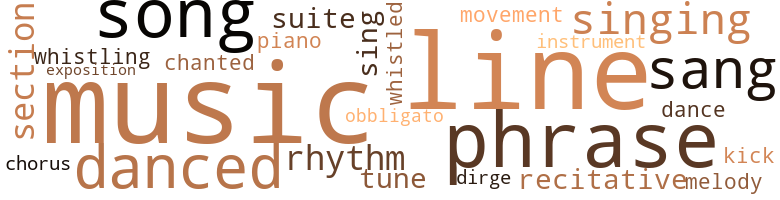
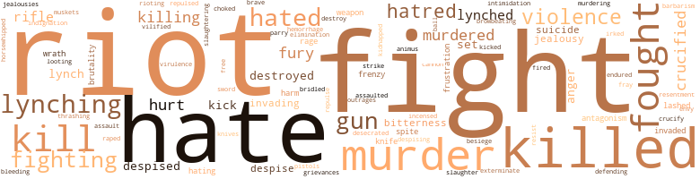
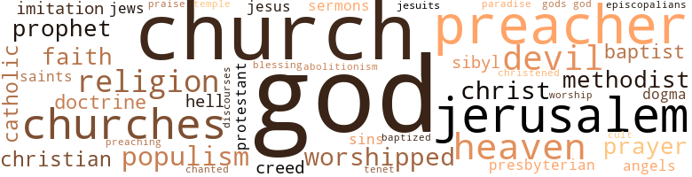

Ordeal of Mansart, by Dubois, W.E.B. (1957)
70 music-related terms matched in this text.
Most frequent terms in this topic: music (9); line (6); danced (5); sang (5); singing (5)
chorus.n.01
Definition: any utterance produced simultaneously by a group
| word | sentence |
|---|---|
| chorus | And above the shrill chorus of Negro hate rose the shriller yell of Tom Watson . |
dance.n.02
Definition: a party of people assembled for dancing
| word | sentence |
|---|---|
| Dance | The Bishop , standing still behind the altar , saw a thousand years of the African Dance of Death gliding out of the past . |
dance.v.03
Definition: skip, leap, or move up and down or sideways
| word | sentence |
|---|---|
| danced | Slowly she swayed and danced through the church . |
| danced | They danced and drank and went about without chaperons . |
| danced | He danced with her and held her more closely than any man ever dared to ; and yet she did not try to extricate herself from his physical strength or from the fiery spiritual lure which he exercised over her . |
| danced | Ladies stood on their chairs and waved their handkerchiefs , while men threw up their hats , danced and gave the Rebel yell . |
| danced | Then they dismembered his genitals , burned him , and danced about the body , mad with hard liquor . |
dirge.n.01
Definition: a song or hymn of mourning composed or performed as a memorial to a dead person
| word | sentence |
|---|---|
| dirge | The audience joined in the solemn voice of the Negro dirge : " God 's gon na shake this wicked world ! " |
exposition.n.04
Definition: (music) the section of a movement (especially in sonata form) where the major musical themes first occur
| word | sentence |
|---|---|
| exposition | But what was needed was a stirring up of the parents ; exposition of the facts , and strong demands . |
kick.v.04
Definition: kick a leg up
| word | sentence |
|---|---|
| kick | Fight back and I 'll kick you out . |
movement.n.05
Definition: a major self-contained part of a symphony or sonata
| word | sentence |
|---|---|
| movement | We must . . . . " There was a slight movement at the door . |
music.n.01
Definition: an artistic form of auditory communication incorporating instrumental or vocal tones in a structured and continuous manner
| word | sentence |
|---|---|
| music | People came scores of miles , marching amid music and roar of cannon . |
| music | Hampton approached with acclaim and martial music . |
| music | How much had black blood and black ways and black music contributed to this state and its civilization ? |
| music | Student singers , carrying on the fame of the earlier celebrated Fisk singers who spread Negro music across the world , were used to help this begging campaign . |
| music | Here Baldwin could chime in : " There is nothing like Negro music . " |
| music | The woman herself filled the pauses and spaces of the recitative with pure music . |
| music | It knew music . |
| music | We may restore popular education to evolve a nation , and a people intelligent rather than smart and rich ; and integrate into this nation the blood and music of ten million Africans . " |
| music | He lived well in Boston , wrote a book on Negro music , and educated his three children in the best schools . |
musical_instrument.n.01
Definition: any of various devices or contrivances that can be used to produce musical tones or sounds
| word | sentence |
|---|---|
| instrument | The instrument was bored into the flesh of the man and the woman , into the arms , legs and body , and pulled out , the spiral tearing out big pieces of raw , quivering flesh every time it was withdrawn . |
obbligato.n.02
Definition: a part of the score that must be performed without change or omission
| word | sentence |
|---|---|
| obbligato | It rose to a murmur and broke into a prayer with low obbligato of strophe and antistrophe : O Lord ( Hear her , Jesus - bless His name ) Receive this soul ( Bow down our knees - and bow our hearts beneath our knees ) That comes a-weeping to your breast . |
phrase.n.02
Definition: a short musical passage
| word | sentence |
|---|---|
| phrases | He had small belief in dogma , doubted miracles and smiled at theological phrases . |
| phrase | Indeed , as the age of puberty approached , the President 's wife noticed with something like horror that Henrietta was in serious danger of falling in love with a classmate , a beautiful , sandy-haired boy , Tommy Hendrick ; white , but " colored " in southern phrase , but as unconscious of race as Henrietta . |
| phrase | Just as the last white person left and the Superintendent was shuffling his papers and trying to think just how to phrase the unpleasant things he must say to this new colored teacher who was better dressed and more upstanding than he had hoped , a white man entered , grasped hands with the superintendent warmly , and they both laughed , sat down , leaned back and smoked leisurely . |
| phrase | The Boston Transcript described him in a phrase from Virgil - " Monstrum , horrendum , ingens , infandum cui lumen ademptum " - " hideous , profane monster , with one eye ! " |
| phrases | He could raise little fervor and did not try , but plodded monotonously through his conventional phrases . |
| phrases | He would have at least the satisfaction of knowing that his complaints and carefully compiled facts would reach the real source of authority and not be lost in James ' halting and softening phrases . |
piano.n.01
Definition: a keyboard instrument that is played by depressing keys that cause hammers to strike tuned strings and produce sounds
| word | sentence |
|---|---|
| piano | They talked again about the concert , and Mansart sang one oi the songs , with Baldwin at the piano : " Walk together , children - do n't you get weary ! " |
recitative.n.01
Definition: a vocal passage of narrative text that a singer delivers with natural rhythms of speech
| word | sentence |
|---|---|
| recitative | The preacher said with staccato bursts of recitative : " Shall I - be car - ried to - the skies On flowery beds of ease ? |
| recitative | The woman herself filled the pauses and spaces of the recitative with pure music . |
rhythm.n.04
Definition: the arrangement of spoken words alternating stressed and unstressed elements
| word | sentence |
|---|---|
| rhythm | He was thin , not tall , but all grace and rhythm ; at the same time arrogant with absolute self-possession . |
| rhythm | The full voice now chanted in rhythm , the gestures were more frequent and wilder , and the emotions were frankly shown in tears and physical gyrations . |
| rhythm | And the roll of the preacher 's rhythm struck like a bared fist . |
section.n.01
Definition: a self-contained part of a larger composition (written or musical)
| word | sentence |
|---|---|
| section | I can promise you Tom , that if you can induce the Negroes to work wholeheartedly along with us we will reform this section and lead it to a new civilization . |
| section | Mansart went to sit with other Negroes in the rear section while Pierce sat in front and silently swore ; " This is the God-damnedest country ! |
| section | They drove slowly down Auburn Avenue and through a better-class Negro residential section . |
sing.v.02
Definition: produce tones with the voice
| word | sentence |
|---|---|
| sang | He whistled and sang and went skipping happily to school ; came home to delicious meals of cornbread , molasses , and collards , with now and then a bit of pork . |
| sang | " Railroads as cards and millions for stakes , " he sang . |
| sang | They sang well to a large and generous audience . |
| Sing | Sing or dance ? |
| sing | " Your fellows certainly sing . " |
| sang | They talked again about the concert , and Mansart sang one oi the songs , with Baldwin at the piano : " Walk together , children - do n't you get weary ! " |
| sang | The black folk under the torches wept and sang : " Nobody knoxvs - nobody knows de trouble I ' se seen ! " |
singing.n.01
Definition: the act of singing vocal music
| word | sentence |
|---|---|
| singing | One heard a nightingale singing . |
| singing | Everybody belonged to a church : to one of the four Negro churches , where shouting and singing filled the day and night on Sunday and at least one weekday night ; to one of the three white churches where the quality of worship varied from the orthodox but fervently evangelical address of the Reverend Dr. Swain of the First Methodist , to the more enthusiastic and unctuous discourses at the First Baptist , down to the wildly orgiastic yelling of the Hard-shell Baptists who often outshouted the Negroes , but with less melody . |
| singing | This audience knew singing instinctively . |
| singing | There had been no such singing for many years in old Friendship . |
| singing | It began in 1865 , when black soldiers actually marched into Charleston , down Meeting Street to the Battery singing " John Brown 's Body . " |
song.n.01
Definition: a short musical composition with words
| word | sentence |
|---|---|
| song | A song started deep in the bowels of the men - O Brethren , my way - my way 's cloudy ! |
| songs | It yielded something in cash but more in publicity ; for summer vacationists loved the Negro folk songs and were willing in turn to hear about conditions in the South . |
| songs | They talked again about the concert , and Mansart sang one oi the songs , with Baldwin at the piano : " Walk together , children - do n't you get weary ! " |
| song | He had preached this Sunday after the riot and ended with that low monotone of the Negro folk song . |
| song | The song of this woman swept on and up until it thrilled the rafters . |
suite.n.01
Definition: a musical composition of several movements only loosely connected
| word | sentence |
|---|---|
| suite | They disembarked in St. Louis and went to a flamboyant hotel , occupying a regal suite . |
| suite | A few days later , in the beautiful suite of a new Peachtree Street hotel , Colonel John Breckinridge held in his arms at a baptismal font , John Breckinridge Du Bignon Baldwin ; while old Dr. Baldwin stood smiling by . |
tone.v.01
Definition: utter monotonously and repetitively and rhythmically
| word | sentence |
|---|---|
| chanted | The full voice now chanted in rhythm , the gestures were more frequent and wilder , and the emotions were frankly shown in tears and physical gyrations . |
tune.n.01
Definition: a succession of notes forming a distinctive sequence
| word | sentence |
|---|---|
| line | He could not share this line of thinking with his wife . |
| tune | Betty Lou came in , tip toed toward her , humming a little tune . |
| tune | She had actually seen and heard black soldiers marching down Meeting Street in old Charleston on tfie great day of surrender , to the tune of " John Brown 's body lies a ' mouldering in the grave but his soul goes marching on ! " |
| lines | Some , like Mansart , expected to come into their own by excelling white people in all lines of endeavor . |
| line | We have challenged your spinners in Massachusetts and your ironmakers in Pennsylvania . . . wiped out the place where Mason and Dixon 's line used to be , and hung out a latchstring to you and yours . . . . |
| line | Even the die-hard Rebels were out of line and attacking the North . |
| melody | Everybody belonged to a church : to one of the four Negro churches , where shouting and singing filled the day and night on Sunday and at least one weekday night ; to one of the three white churches where the quality of worship varied from the orthodox but fervently evangelical address of the Reverend Dr. Swain of the First Methodist , to the more enthusiastic and unctuous discourses at the First Baptist , down to the wildly orgiastic yelling of the Hard-shell Baptists who often outshouted the Negroes , but with less melody . |
| line | She became the influence behind the beneficial societies and trade unions ; and by threat and promise , as well as by ancient remnants of African lore and culture pattern , she wheeled church and minister in line . |
| lines | Negro competing business , in general lines , could not vie with whites . |
| line | This line , emphasized by ownership of property and better paid employment , became in cities like Charleston and New Orleans a distinct class cleavage . |
| line | The new National Association for the Advancement of Colored People , formed at the conference in New York , brought Professor Burghardt from Atlanta as its chief spokesman and adopted a line of concerted action in the courts , which might mean trouble . |
whistle.v.01
Definition: make whistling sounds
| word | sentence |
|---|---|
| whistled | He whistled and sang and went skipping happily to school ; came home to delicious meals of cornbread , molasses , and collards , with now and then a bit of pork . |
| whistling | His hair , dose curled , lay on his wellshaped head like a mat , and he was walking along whistling happily , with books under his arm . |
497 violence-related terms matched in this text.
Most frequent terms in this topic: riot (41); fight (38); killed (34); hate (33); murder (28)
affray.n.02
Definition: a noisy fight
| word | sentence |
|---|---|
| fray | He tried desperately to get away but was caught in the draft , and making a virtue of necessity joined the company , became its captain , and was ' missing ' after the first fray . " |
anger.n.01
Definition: a strong emotion; a feeling that is oriented toward some real or supposed grievance
| word | sentence |
|---|---|
| anger | He glared at the returned couple in grim anger . |
| anger | Scroggs roared in anger . |
| anger | But as he took another whiskey and started home he caught a glimpse of the Negro schoolhouse and with a fresh burst of anger turned toward it alone , lie walked down through the Negro quarter elbowing loitering Negroes aside and entered the schoolhouse through the back door . |
| anger | The ignorant , the superstitious , feed on such flame and go mad with anger and hate . |
animosity.n.01
Definition: a feeling of ill will arousing active hostility
| word | sentence |
|---|---|
| animus | The President of Wellesley said frankly that Miss Frei - burg 's evident animus against Great Britain must arise from her German descent , and while understandable it was of course impossible for the college to allow such a picture of the British Empire to be drawn on the campus . |
assail.v.01
Definition: attack someone physically or emotionally
| word | sentence |
|---|---|
| assaulted | Voters were threatened , intimidated , assaulted and at least fifteen Negroes were killed outright . |
besiege.v.01
Definition: surround so as to force to give up
| word | sentence |
|---|---|
| besiege | But we ought to besiege the throne of God for help in bearing this intolerable burden . " |
bleeding.n.01
Definition: the flow of blood from a ruptured blood vessel
| word | sentence |
|---|---|
| bleeding | He saw 25,000 bleeding and festering corpses . |
| hemorrhage | The Colonel gave his grandson to the arms of radiant Betty Lou , turned slowly to sit down , and died of a cerebral hemorrhage . |
brawl.n.02
Definition: a noisy fight in a crowd
| word | sentence |
|---|---|
| free-for-all | In the free-for-all which spelled Chicago this exercise of muscle and brain released among Negroes as among whites large amounts of energy and power ; but what for ? |
bridle.v.01
Definition: anger or take offense
| word | sentence |
|---|---|
| bridled | She bridled : " I will be judge of that . " |
brutality.n.02
Definition: a brutal barbarous savage act
| word | sentence |
|---|---|
| barbarism | Another prominent Southern clergyman , Henry Frank , advocated the re-establishment of slavery : " The Negro 's native sluggishness , and the evidence of his general extinction since his emancipation , his imperceptible improvement since liberation , his startling lapse into barbarism , all must incline thinking people to conclude that the freeing of the Negro was a disastrous failure . " |
bullying.n.01
Definition: the act of intimidating a weaker person to make them do something
| word | sentence |
|---|---|
| intimidation | Federal supervisors under United States marshals attended the election in Augusta but could not prevent repeatings , bribery , ballot-box stuffing , voting of minors and intimidation . |
butcher.v.01
Definition: kill (animals) usually for food consumption
| word | sentence |
|---|---|
| slaughtering | There was simply nothing to eat one day , but the Negroes next door were slaughtering a hog - a fat hog , carefully brought up and nurtured and looked forward to as support , indulgence and well-being . |
cannon.n.04
Definition: heavy automatic gun fired from an airplane
| word | sentence |
|---|---|
| cannon | People came scores of miles , marching amid music and roar of cannon . |
contemn.v.01
Definition: look down on with disdain
| word | sentence |
|---|---|
| despised | She despised or feared them . |
| despise | " This about them : They fought slavery , but they despise darkies and are as eager as we are to disfranchise them . |
| despising | But little John grew up despising Negroes as stubborn and thriftless . |
| despise | His inherited reaction was to despise if not hate Negroes . |
| despised | His attitude toward black folk now changed , tie had disliked them before but now he despised them because they were not really human . |
| despised | He knew little of secret orders and despised them as the weakness of petty minds , until he realized what the former slaveholders and the capitalists who succeeded them were doing with them among whites in the New South . |
| despise | Instead of this I must go and try to do what least I 'm fitted to do : persuade and cajole men who will hate and despise me for trying . " |
| despised | He despised cowards . |
craze.n.02
Definition: state of violent mental agitation
| word | sentence |
|---|---|
| frenzy | Sometimes he made romantic love , but mostly he raped her in drunken frenzy . |
| frenzy | Here was the call , the demoniac possession , the frenzy of religious madness . |
crucify.v.01
Definition: kill by nailing onto a cross
| word | sentence |
|---|---|
| crucified | You crucified their leaders . |
| crucified | She remembered the day when this fabled John Brown had been crucified and nailed to a bloody cross , with five black men . |
| crucify | You do n't need to segregate them or to crucify they . |
| crucified | Preach Christ crucified and raise money . |
| crucified | Girl you just ca n't bring black kids into this world and see them crucified . |
| crucified | Later , that 25th United States Negro regiment which he crucified , had held San Juan Hill for his undisciplined troops . |
| crucified | Preach Christ crucified and tell how much more crucifixion is asked of each of us here , and now , or God himself will die . |
| crucified | Bewildered we are , and passion-tost , mad with the madness of a mobbed and mocked and murdered people ; straining at the armposts of Thy Throne , we raise our shackled hands and charge Thee , God , by the bones of our stolen fathers , by the tears of our dead mothers , by the very blood of Thy crucified Christ : What meaneth this ? |
desecrate.v.01
Definition: violate the sacred character of a place or language
| word | sentence |
|---|---|
| desecrated | Kitchener - with the newly invented machine gun , then recaptured Khartoun and desecrated the ashes of the great Mahdi . |
destroy.v.04
Definition: put (an animal) to death
| word | sentence |
|---|---|
| destroyed | Property has been destroyed and confiscated and re-distributed . |
| destroy | They would steal and destroy and wreak vengeance for themselves ; but the planters must pay . |
| destroyed | The panic of 1873 was caused by a bloody , cruel and costly war which ruined lives and plans , destroyed and misused hard-earned property , interfered with education , lowered morals and dealt civilization mortal blows . |
| destroyed | And property - not of the white rich but the hard savings of the black poor - had been stolen or destroyed . |
| destroyed | The earthquake was far more disastrous : 50o died and 350 millions of wealth were destroyed . |
elimination.n.05
Definition: the murder of a competitor
| word | sentence |
|---|---|
| elimination | Immediately Smith replied , pledging " the elimination of the Negro from politics . . . without disfranchising a single white man ! " |
envy.n.01
Definition: a feeling of grudging admiration and desire to have something that is possessed by another
| word | sentence |
|---|---|
| envy | It was a stodgy little university town , full of gossip and envy . |
exterminate.v.01
Definition: kill en masse; kill on a large scale; kill many
| word | sentence |
|---|---|
| exterminate | He gradually began to persuade himself that he was doing God 's appointed work in helping restrain or exterminate black criminals . |
ferociousness.n.01
Definition: the trait of extreme cruelty
| word | sentence |
|---|---|
| brutality | You have swept all knowledge of these great leaders of American democracy from the record so that today , unled , the masses of my people crawl in abject servitude while you bow to the circus performing of Wade Hampton and the coarse brutality of a Tillman . |
| brutality | The Depression persisted , with strikes , brutality and distress . |
fight.n.02
Definition: the act of fighting; any contest or struggle
| word | sentence |
|---|---|
| fighting | All this turmoil and fear and fighting was ridiculous . |
| fighting | His nerves are on edge , which explains his fighting , hi » crazy hyperbole , his hiding for rest and recovery . " |
| fighting | About a situation so unreal and false as this must come forms of indulgence in appetites and excess ; and in Jerusalem it took the path of drunkenness , gambling and fighting . |
fight.n.05
Definition: a boxing or wrestling match
| word | sentence |
|---|---|
| fight | The Republicans organized one House of Representatives , the Democrats another , and the two bodies began a wild fight for control until the United States army interfered . |
| fight | It all seemed curiously petty , but he could not drag himself away from this thought of the colored people , of Mansart , of the fight in South Carolina . |
| fight | He 's served one term in the Legislature and put up a fierce fight against Col-quit , the gang governor . |
| fight | He sensed the revolt of farmers and laborers against capital and industry and began a fight in Georgia when he was elected to the Legislature in 1880 . |
| fight | In this way the fight would become a struggle of white against black and not of rich against the poor , with " niggers " in both groups . |
| fight | The fight is upon you - not bloody as then - but as bitter ; not with men who come to free your slaves , but who come to make slaves of you . " |
| fight | This and Watson 's career in Congress brought the critical fight between labor control and reaction into the open . |
| fight | Scroggs had jostled the big , rough , one-eyed farmer and both bristled , ready for a fight , when Tillman grinned and held out his hand , at the same time warning Scroggs not to disclose his identity . |
| fight | Watson announced that he would carry on the Third Party fight . |
| fight | Let the fight of 1896 begin now ! " |
| fight | The fierce fight to keep land and to get land was foremost in the minds and acts of men . |
| fights | The air was tense ; brawls and fights broke out , usually within the race groups but sometimes between the races . |
| fight | She knew that without a fight she could not keep Mrs. Scroggs from getting this bit of chitterlings . |
| fight | If there was a fight Nancy or her husband would go to jail without any question . |
| fight | Their fight against Capital was a fight against the foundations of the universe . |
| fight | Their fight against Capital was a fight against the foundations of the universe . |
| fight | A fight between capitalists and laborers emerged on levels far higher than before and more dangerous to business because it now included educated and trained leadership . |
| fight | Then from the great fight before him to release Democracy from organized wealth Roosevelt was unfortunately drawn into imperialism . |
| fight | A somewhat similar mixup in the 18th century led to black masons which the whites refused to recognize but whose legitimacy they had to admit after a fight of two centuries . |
| fight | There was child labor , and despite a long fight , no bill against it could be forced through . |
| fight | Then the fight went into politics and a Democratic convention in Macon in September became a mob and a riot . |
fight.v.02
Definition: fight against or resist strongly
| word | sentence |
|---|---|
| fought | They must reorganize their strategy : the Negroes must not be fought as ex-slaves but as grafters like Tweed and the Whiskey Ring . |
| fight | The blacks could fight but they got few arms , and are divided up in leadership . |
| fight | But they 'll fight if they must . |
| fought | She turned toward him : " I have no desire to meddle in politics , dear , and doubtless you know your business best ; yet in a sense I have fought these postwar years by your side . |
| fighting | She knew they were both fighting for time and adjustment . |
| fighting | She lay a long week , husbanding her strength , dozing and fighting back her urge to think . |
| fought | And what about the masses of white laboring riff-raff who fought and won this war ? " |
| fought | " This about them : They fought slavery , but they despise darkies and are as eager as we are to disfranchise them . |
| fighting | If while they and the Southern whites arc fighting ' niggers , ' we are consolidating our power in the world so as to hold all labor in its tracks , we can own the world ! " |
| Fight | Fight it out . " |
| fought | Suddenly the little fellow saw red ; he fought like a demon ; he tore the clothes off the older boy and brought blood . |
| fight | Do n't fight . |
| fighting | It looked for a while as though the stars in their courses were fighting for Democracy in the South . |
| fought | He had fought a duel here in 1848 but now was a cripple on crutches and was on his way to Savannah . |
| fought | Fie was never reconstructed and fought Northern capital as he fought abolition . |
| fought | Fie was never reconstructed and fought Northern capital as he fought abolition . |
| fought | He had fought with Lee and surrendered with him at Appomattox ; he was governor of Georgia and fellow-grafter with Huntington and old John Pierce in the Southern Pacific deal . |
| fighting | Three big six-foot men are fighting . |
| fighting | He is fighting modern capital . |
| fighting | " We 'll have the Democrats in the White House in a few years , " Field assured them , " but we must keep them from fighting the war over again . " |
| fought | It began to win strikes , but the employers fought back bitterly and killed it with the Haymarket Riot in 1886 for which it was not responsible . |
| fight | " You do not have to organize and fight in order to keep people down who are naturally down , who are born down , and who by no possibility can rise very far . |
| fighting | He demanded Negro education and praised the black King Lobertgula then fighting Cecil Rhodes and the British grip on Africa . |
| fight | With these leaders Breckinridge and his class had been compelled to make alliance in order to fight the Yankees and their black dupes . |
| fighting | Watson addressed them : " We are determined in this free country that the humblest white or black man that wants to talk our doctrine can do it , and the man does not live who shall touch a hair of his head without fighting every man in the People 's Party . " |
| fight | You 've got to fight and then fight some more ; and you 've got to know what you are fighting for . |
| fight | You 've got to fight and then fight some more ; and you 've got to know what you are fighting for . |
| fighting | You 've got to fight and then fight some more ; and you 've got to know what you are fighting for . |
| fight | This crowd was ready to fight for a " nigger " ; they were ready to kill . |
| fought | Ten more laggard years he fought back its ravages in ever failing effort ; until discouraged and forgotten , he died in Texas where the Fanners Alliance had been born . |
| Fight | Fight back and I 'll kick you out . |
| fought | The merchants drove hard bargains or cheated deliberately ; the landed aristocracy neglected its debts from carelessness or necessity ; the white and black laborers fought for employment ; and the new " democracy " began to function with the Negroes intimidated or forcibly disfranchised or given " friendly " advice by employers . |
| fought | Sometimes the colored women fought furiously to ward off white men even to maiming and murder . |
| fight | He doubted if he was strong enough or knew how to fight . |
| fight | But suppose he could and did fight ? |
| fight | They insisted that Negroes could fight under Negro officers , and said that in Cuba , Negro troops had fought well when most of their white officers were dead or absent . |
| fought | They insisted that Negroes could fight under Negro officers , and said that in Cuba , Negro troops had fought well when most of their white officers were dead or absent . |
| fight | They knew that these white , yellow and black folk could be educated ; that they could and did fight as soldiers against whiites and because of this brought the surrender of the South at Appomattox ; and that the real nightmare of Reconstruction was not the failure of the Negro voter , but the fact that he did learn and could rule . |
| fought | It was in the North , then , that the real battle was fought , and lost only after sincere struggle . |
| defending | The group formed the only Americans , at the opening of the 20th century , defending real democracy in the United States . |
| fight | Then they began to fight the attempt of Negroes further to enter the ranks of skilled labor and the by no means negligible efforts of Negro capital . |
| fought | Wealth fought him through the courts , which practically overthrew his anti-trust legislation and opposed his conservation program . |
| fought | He used the Big Stick in Panama ; he fought for the " open-door " for Big Business in China . |
| fought | Smith ran for governor in the Democratic primary and fiercely fought against the trusts , the railroads , against corporations and Northern investors . |
| fought | Foraker aroused his father , the United States Senator , who fought ten years before he secured partial redress . |
| fight | No - I must fight - to win the prize , And sail - through bloody seas . " |
| fight | Now as I see it , one sin is that the churches are so divided ; black and white ; Protestant and Catholic ; Methodist , Baptist and whatnot - do n't you think we ought to begin to have common services , joint efforts , interlocking organizations in order to fight evil , to get to know each other better and achieve brotherhood ? " |
| fighting | It was fighting the stars of industry in their courses . |
| fought | The office paid little and it was the principle for which she had fought . |
| fight | I have been asked to come North and head a new organization to fight for Negro rights . |
| fighting | There was no need then , they argued , to keep such children in school , and after all , the strikers were fighting the results of a fall in the price of cotton and an increase in the price of food . |
| fought | They began publication of the Guardian , which from 1901 on fought a fierce battle against Washington and his white friends , and for complete political and social equality despite color and race . |
| fought | " Today they learn that , though their ancestors have fought in every war in behalf of the United States , in the fiftieth year after Gettysburg and Emancipation , this Government , founded on the theory ' of complete equality and freedom for all citizens , has established two classes among its civilian employees . |
| fighting | It had not come in 1907 because the Negroes of Gary were fighting the Negro school and objected to outsiders being brought in . |
| fight | Bruce piped up : " Why do n't we fight - get guns and kill white folks ? " |
| fight | Revels said thoughtfully , " So we ca n't fight and we ca n't give up . |
| fighting | But the Devil stepped in and the Democrats , instead of supporting Chamberlain or not fighting him , followed the ' Straight-Outs ' and named Hampton . |
| fought | They poured in after that war called " Spanish Succession , " but really fought by English merchants to gain control of the trade in African slaves . |
frustration.n.03
Definition: a feeling of annoyance at being hindered or criticized
| word | sentence |
|---|---|
| frustration | Watson 's mind began to break ; he began to have a persecution complex and see the Negro as a cause of his own continued frustration and failure . |
| frustration | As he lay dying he had a full sense of the frustration and disappointment of his life . |
fury.n.01
Definition: a feeling of intense anger
| word | sentence |
|---|---|
| rage | In bitter rage he brooded . |
| fury | She waited , in proud fury and hesitation , for him to mention again the marriage ceremony . |
| fury | He heard the fury of its waters leaping from crag to precipice , rushing down to feed the Nile - the endless and eternal Nile . |
| rage | Betty Lou was beside herself with rage , but the old man took no notice of it . |
| fury | Then he roared , raving , into the Atlanta Riot and the fury and flame of the San Francisco Earthquake . |
| fury | The entire state of Georgia was fanned to fury . |
| fury | Their cries rose like a cloud of sound ; the fury of their rush swept over the children like a breath of hell . |
| fury | They , too , yelled with fury , and then all writhed together until suddenly all were gone ; all save the few stark , dirty , reddened forms that never stirred again . |
| fury | Red was the midnight ; clang , crack and cry of death and fury filled the air and trembled underneath the stars where church spires pointed silently to Thee . |
gag.v.06
Definition: cause to retch or choke
| word | sentence |
|---|---|
| choked | She choked back her indignation and answered : " Colonel Breckinridge was coming to this meeting tonight , to give you his word of honor to guard your rights if you will give us your cooperation and support . |
gall.v.02
Definition: irritate or vex
| word | sentence |
|---|---|
| irked | Moreover - and this was what irked him - he needed this alliance . |
grudge.n.01
Definition: a resentment strong enough to justify retaliation
| word | sentence |
|---|---|
| grievances | They brought their grievances to the notice of newspapers and churches . |
gun.n.01
Definition: a weapon that discharges a missile at high velocity (especially from a metal tube or barrel)
| word | sentence |
|---|---|
| gun | The man shifted his gun - . |
| guns | The men swore and both started to raise their guns . |
| guns | A hundred guns thundered and lightened as a wind of lead shattered the house where his body leaned , and left it a jelly of mangled flesh , blood and bone . |
| guns | Women cowered and men lingered their guns . |
| gun | Kitchener - with the newly invented machine gun , then recaptured Khartoun and desecrated the ashes of the great Mahdi . |
| guns | Suddenly his men let out the shrill Rebel yell and started forward cursing , with guns waving . |
| guns | Just as suddenly an answering yell shrieked up from the listening throng ; guns glistened and clicked and horsemen whirled and then stopped . |
| gun | Slowly , slowly , Scroggs paused and lowered his gun , glanced at his followers and began to move backward . |
| gun | They put a gun in his hand and stood him on guard . |
| guns | He had used old-fashioned shot guns for hunting now and then , but he had never seen anything like this machine . |
| gun | Then he threw the gun to his shoulder , aimed at a great black button and pulled the trigger . |
| gun | Tom dropped his gun , wandered over the shining land and waters until between Port Royal and Beaufort he staked out a little farm , bought a mule and some tools and built a cabin . |
| guns | There are still ropes and guns in the South . " |
| guns | Burghardt stubbornly stuck to his guns and the girl did not graduate . |
| guns | The police came " looking for guns , " and behind them surged the white mob looking for loot . |
| guns | The police with guns and clubs subdued all Negroes who tried to resist . |
| guns | Bruce piped up : " Why do n't we fight - get guns and kill white folks ? " |
| guns | " They got more people than we , " said Revels , " and the people got more guns . " |
hate.n.01
Definition: the emotion of intense dislike; a feeling of dislike so strong that it demands action
| word | sentence |
|---|---|
| hate | " We all know that Scroggs and his gang with whom we have made alliance hate Negroes worse than starvation . |
| hate | First came the aftermath of war with hate between Confederate and Yankee , with most Negroes ranged with the Yankees and the mass of white workers with no allegiance but bitter race prejudice . |
| hate | When they saw the whites moving at the head of the alley they let out a growl of distaste and hate . |
| hatred | There was a curious old uncle , usually drunk , whom his father hated with perfect hatred because he represented the family as well as anybody else . |
| hatred | Kindness , good-will of all people toward each other ; not hatred , not murder . |
| hate | Instead of nourishing insane hate of the North and bewailing a lost civilization , this busy , energetic and ruthless town began a new culture designed to bring North and South together in profitable partnership . |
| hatred | He hated Negroes with a deep , blind hatred . |
| hate | That left a heterogeneous mass of festering ignorance and poverty , bitter and frustrated , but with no centering thought for a leader to take hold of ; no class consciousness , plans nor ideals except hate , blood and loot . |
| hatred | You are made to hate each other because upon that hatred is rested the keystone of the arch of financial despotism which enslaves you both . |
| hatred | His hatred of the aristocracy of land and capital increased when one night as he was looting a Negro home during a raid , a prominent white man stopped him . |
| hatred | He saw one ray of light : the hatred , bitter hatred of men like Scroggs for the Negroes . |
| hatred | He saw one ray of light : the hatred , bitter hatred of men like Scroggs for the Negroes . |
| hate | If he hated Negroes in general , his hate of educated Negroes was emphasized by fear . |
| hate | Reaction and race hate in Georgia wheeled into line . |
| hate | I still maintain that occasional intermarriage , probably rare in the present feeling about race difference , would be better and wiser than cultivation of race hate as necessary and God-given . " |
| hate | In his environment he was almost compelled to breathe in race hate . |
| hate | In other cases they flaunted their sex attraction for white men in the very faces of white women , who could but helplessly hate , and hate they did . |
| hate | Thus happy , careless guffaws hid bitter hate and even despair with impenetrable good humor . |
| hatred | Had he tried to explain his hatred he would have traced it to an incident of his life when a small child . |
| hate | He was not conscious of any beginning or reason for his hate . |
| hatred | From that day he hated Negroes with perfect hatred . |
| hatred | His racial antipathies had been accentuated , his hatred of Yankees increased , and he was incensed to find the Negro school using money belonging of right only to whites and taught by a well-dressed and college-bred Negro . |
| hate | The depths to which American civilization sank in race hate is almost unbelievable . |
| hatred | Disfranchisement , caste and lynching brought hatred , riot and murder . |
| hate | This increased race hate , until at last in 1901 , the Federation of Labor came out flatly in favor of disfranchising Negroes , thus deliberately cutting the labor vote in two . |
| hate | His youthful culture-patterns of Negro hate and fear rose again to consciousness . |
| hatred | This must be turned into a mad campaign of race hatred and hysteria , harking back to 1876 , without the threat of that period really present . |
| hate | Through the long , fetid years the pus of race hate festered and swelled in the putrid boil . |
| hate | The ignorant , the superstitious , feed on such flame and go mad with anger and hate . |
| hate | And above the shrill chorus of Negro hate rose the shriller yell of Tom Watson . |
| hate | That murder and flame came from the hate and horror of Atlanta . " |
| Hate | A city lay in travail , God our Lord , and from her loins sprang twin Murder and Black Hate . |
| hate | He had not reckoned on race hate as so terrific an impulse ; so frightful a motive . |
| hate | On the occasion of the Atlanta riot , for instance , he said in class that this " deliberate murder was the direct outcome of the dirty political deal between Northern industry and Southern race hate . " |
| hate | I was freed and yet I did not understand until this riot , this horror of hate and death which swept over us . |
hate.v.01
Definition: dislike intensely; feel antipathy or aversion towards
| word | sentence |
|---|---|
| hated | They resented the piedmont whites only a little less than they hated the Negroes ; it had been suggested that by playing on these two motives an alliance might be made which would save the old landed aristocracy of Carolina . |
| hated | Also - and this was important - they might be the best means of holding black labor in bounds simply because they hated Negroes so bitterly . |
| hates | They used work rivalry , social hates and finally Hampton dramatized Sex . |
| hate | The poor whites , who ought to be with us , hate us worse than they hate the planters . |
| hate | The poor whites , who ought to be with us , hate us worse than they hate the planters . |
| hate | And we are just as stupid and hate them . |
| hated | Many people liked New Orleans , but he hated it . |
| hated | There was a curious old uncle , usually drunk , whom his father hated with perfect hatred because he represented the family as well as anybody else . |
| hated | Betty Lou avoided her as much as possible ; but she hated the thought of returning to Charleston and began to go out with the crowd of young people that swarmed about the big house . |
| hated | He hated to meet him ; it was a hard job . |
| hated | He increasingly hated what was going on about him . |
| hated | He concluded that white folks were dangerous and unreliable people ; that they hated Negroes and were determined to injure them . |
| hating | Atlantans had lost no picturesque plantation mansions , having never owned any ; they had lost no faithful " retainers , " having owned few slaves and hating the sacred " institution " because it took bread from the mouths and work from the hands of most Atlanta settlers . |
| hated | He hated Negroes with a deep , blind hatred . |
| hated | But he believed in honesty , he hated lying ; he did not drink liquor and he respected women . |
| hate | His inherited reaction was to despise if not hate Negroes . |
| hate | You are made to hate each other because upon that hatred is rested the keystone of the arch of financial despotism which enslaves you both . |
| hated | If he hated Negroes in general , his hate of educated Negroes was emphasized by fear . |
| hate | This , pleaded Science , was in the long run legitimate and would lead to the best human stock ; this , argued Religion , is not hate and suppression but recognition of the " divine purpose " in history . |
| hate | In other cases they flaunted their sex attraction for white men in the very faces of white women , who could but helplessly hate , and hate they did . |
| hating | And fear gripped the Negroes : whether they were humble drudges , striving desperately to please their masters ; or bitter , hating serfs driven by hunger or blows or threat of the chain gang ; or hardworking laborers , glimpsing a far-off freedom for their children . |
| hated | He hated Negroes with a dark , unreasoning passion . |
| hated | From that day he hated Negroes with perfect hatred . |
| hated | During all their lives color had denoted inferiority ; much as they disliked and even hated most white folk , yet as a matter of fact they granted white superiority , because the white world dominated their values and judgments , while the surrounding dark world was evidently inferior even if that inferiority was not the black man 's fault ; or ( and this was the lurking inner doubt ) what if the Negro was in fact lesser in ability than the white ? |
| hate | " No ; and since the riot I hate it . " |
| hated | He hated the assignment but he could not refuse in the face of unanimity . |
| hate | I feel I should go and yet I hate to give up my life work as a social scientist . |
| hate | I hate to leave this work , but ---- ' " The worried face of the President lighted up , and relief outshone regret . |
| hated | " I hated Thomas Jesse Jones as the dishonest spy for rich philanthropists . |
| hate | Instead of this I must go and try to do what least I 'm fitted to do : persuade and cajole men who will hate and despise me for trying . " |
| hated | They had no reverence for God nor man and they hated white men . |
| hated | Yet he pitied him rather than hated him . |
| hated | She hated Gary and Butler after the Hamburg riot . |
horsewhip.v.01
Definition: whip with a whip intended for horses
| word | sentence |
|---|---|
| horsewhipped | Jones ought to be horsewhipped for accepting a judgeship on the recommendation of a Negro . " |
hostility.n.02
Definition: a state of deep-seated ill-will
| word | sentence |
|---|---|
| antagonism | There was no laughter , no expectancy ; rather she sensed surprise , doubt , antagonism , distrust . |
| antagonism | You are deceived and blinded that you may not see how this race antagonism perpetuates a monetary system which beggars both ! |
indignation.n.01
Definition: a feeling of righteous anger
| word | sentence |
|---|---|
| indignation | She choked back her indignation and answered : " Colonel Breckinridge was coming to this meeting tonight , to give you his word of honor to guard your rights if you will give us your cooperation and support . |
| outrages | And wherever there are men who rob the Negroes of their voles , who exploit and degrade and insult and lynch those whom they call their inferiors , there this mistaken action of the Federal Government will be cited as the warrant for new racial outrages that cry out to high Heaven for redress . |
infuriate.v.01
Definition: make furious
| word | sentence |
|---|---|
| incensed | Trotter was incensed and retorted bitterly that " colored people did not seek charity or assistance but that they took the position that they had equal rights with whites and that these rights should be respected . " |
injury.n.01
Definition: any physical damage to the body caused by violence or accident or fracture etc.
| word | sentence |
|---|---|
| hurt | Suddenly she was startled ; suddenly she realized that she had blundered into something of which she had not dreamed : hate , fear , hurt and revenge swirled silently round about her . |
| harm | He do n't mean no harm . |
| harm | This would keep white union labor within reasonable demands ; it would enable the South to recover and develop ; it would help the already developing North , and no harm would be done to anyone because certainly the mass of Negro voters were not yet ready for participation in a Democracy . |
| hurt | John James was dark and wrinkled , with something of the hurt dog look in his kindly and dim old eyes . |
invade.v.01
Definition: march aggressively into another's territory by military force for the purposes of conquest and occupation
| word | sentence |
|---|---|
| invading | Chamberlain 's campaign was practically stopped by armed men invading his meetings and taking charge . |
| invading | Miss Freiburg noted it almost negligently at the close of class : " By the by , you might be interested in this bit of news : yesterday Menelik of Abyssinia overthrew the invading Italian army at Adua and slew 25,000 . " |
| invading | " The Great Barbecue invited a second generation of Carpet-baggers as Northern business men invading the South in search of profits . " |
| invaded | They could do very little with regard to crime because their first business was to protect status ; to give the white man , even the poor whites , a preferred position in the community which under no circumstances could be questioned or invaded by blacks . |
| invaded | Moreover , he could steal from the Negro cabins which were often invaded , and that was helpful support to his family . |
jealousy.n.01
Definition: a feeling of jealous envy (especially of a rival)
| word | sentence |
|---|---|
| jealousies | His forte as he gradually conceived it was to weld a fast alliance of dependable Negro labor with the rich whites , while watching narrowly for betrayal ; for this purpose his white advisers insisted that he must get firm hold of Negroes despite their weaknesses and jealousies . |
| jealousy | The Negroes were stirring , and the stirring of the Negroes meant jealousy among the poor whites . |
| jealousy | But the whole development brought fear and jealousy to the poor white laborers . |
| jealousy | Some of the insurance business flourished ; individual contractors made money ; Negro stores and other enterprises multiplied ; and the whole development brought fear and jealousy to the poor white world . |
kick.v.04
Definition: kick a leg up
| word | sentence |
|---|---|
| kick | Fight back and I 'll kick you out . |
kick_back.v.02
Definition: spring back, as from a forceful thrust
| word | sentence |
|---|---|
| kick | He knew that the planters would use them to the limit and then kick them around as they did the darkies . |
| kick | But here was a concrete case : that same hulking red-faced Scroggs who had beaten him he came to recognize as liking especially to pick on little colored children and to chase , kick and scare them . |
| kick | As soon as a poor white got up in the world - in money , position or learning - he hastened to become an " aristocrat " ; he referred to slaveowning forefathers ; he pretended to have had a " black Mammy " ; he tried to kick other poor whites around just as he did " niggers . " |
| kicked | It had " neither Body to be kicked nor Soul to be damned " ; but in the present century , it owned the Earth and enslaved Mankind . |
kidnap.v.01
Definition: take away to an undisclosed location against their will and usually in order to extract a ransom
| word | sentence |
|---|---|
| kidnapped | I can not imagine why he has not come - or perhaps he has come and . . . . " She paused and stared at Mansart in sudden fear - had they kidnapped her husband - or killed him ? |
kill.v.10
Definition: cause the death of, without intention
| word | sentence |
|---|---|
| killed | Or better , killed and her death laid to the " niggers . " |
| killed | I can not imagine why he has not come - or perhaps he has come and . . . . " She paused and stared at Mansart in sudden fear - had they kidnapped her husband - or killed him ? |
| kill | They are massing the poor whites to kill the ' niggers ' ! " |
| killed | She might even be killed deliberately - even here in the city , - and her murder placed at his door . |
| Kill | Kill ! |
| killed | What excuse was it that their slaves had cheated and killed in turn ? |
| kill | He did not kill the Negro but he let him be killed . |
| killed | He did not kill the Negro but he let him be killed . |
| kills | We made the mistake of war and war kills reason . |
| kill | He sought to join them and was only allowed to join the Klan and drink , kill , steal and rape . |
| killing | While the rabble was killing , drinking and whoring , his group was bargaining . |
| kill | They were willing to join the Ku Klux and kill " niggers " for the planters . |
| killed | " Because your father killed my husband ! " |
| kill | I want to live like a man - and I do n't want to have to kill nobody . " |
| killed | The black leadership of the South has not been killed . |
| killed | Several mass meetings were held , but at the last one , held during the October Fair , the forces against this Northern innovation got control and killed the scheme . |
| killed | It began to win strikes , but the employers fought back bitterly and killed it with the Haymarket Riot in 1886 for which it was not responsible . |
| killed | They represented the rich planter class , and although they killed Negroes at Colleton , Beaufort , Hamburg and Ellenton , they rode as planters and aristocrats with no recognition for other whites . |
| kill | He proposed to increase this common action and kill , rape and rob Negroes so long as the aristocrats stood back of them . |
| kill | They 've got to be put in their places even if we have to kill a few thousand . |
| kill | We 'll help put the darkies in their place and Help kill 'em off ; but not just to make little white farmers and merchants into big whites while we be their slaves instead of the ' niggers ' or along with ' niggers . ' |
| killed | Fifteen Negroes were killed , but increasing numbers of them worshipped Watson . |
| killed | One of their number , Sam Scroggs , had been killed in Charleston in the campaign of 1876 . |
| killed | Scroggs was killed mysteriously in the Negro quarter on the night that the Negro leader , Tom Mansart was lynched . |
| kill | We are going to kill and lynch them if they dare to look at our women . |
| kill | This crowd was ready to fight for a " nigger " ; they were ready to kill . |
| killed | Voters were threatened , intimidated , assaulted and at least fifteen Negroes were killed outright . |
| killed | Watson said , " It was almost a miracle that I was not killed . " |
| killed | The governor of the state added that he ought to have been killed . |
| killed | They got to be stopped from voting , killed off or sent back to Africa to eat each other up . " |
| kill | We 'll help crush and kill the ' niggers ' ; you take over the state with the help of our votes . |
| killing | Some of it came from the necessity of forced labor , but most of it came because men did not hesitate at killing each other . |
| killed | Everybody went armed and if a man was killed the only question was : what was the murderer 's race ? |
| killed | If he was white , in nine cases out of ten nothing was done , even though he killed another white man . |
| killed | He had been killed , but his widow and children still lived in the country near Jerusalem . |
| kill | He could kill them . |
| killed | The Superintendent took no notice of this : he was staring at Mansart 's face and saw how the ashen pallor had killed the rich deep brown . |
| kill | One man who was arrested at Tuskegee confessed ( whether with truth or not ) that he had been sent from Louisiana to kill Booker Washington . |
| killed | Tillman raged openly on the floor of Congress : " Yes , we have stuffed ballot-boxes , and will stuff them again ; we have cheated ' niggers ' in elections and will cheat them again ; we have disfranchised ' niggers , ' and will disfranchise all we want to ; we have killed and lynched ' niggers ' and will kill and lynch others ; we have burned ' niggers ' at the stake and will burn others ; a ' nigger ' has no right to live anyhow , unless a white man wants him to live . |
| kill | Tillman raged openly on the floor of Congress : " Yes , we have stuffed ballot-boxes , and will stuff them again ; we have cheated ' niggers ' in elections and will cheat them again ; we have disfranchised ' niggers , ' and will disfranchise all we want to ; we have killed and lynched ' niggers ' and will kill and lynch others ; we have burned ' niggers ' at the stake and will burn others ; a ' nigger ' has no right to live anyhow , unless a white man wants him to live . |
| kill | Tillman said : " There might be no alternative for the Southern people but to kill Negroes to prevent them from holding office . |
| killed | They shot at each other and the white man was killed . |
| killed | Oh , no ; he had killed a white man who was trying to kill him . |
| kill | Oh , no ; he had killed a white man who was trying to kill him . |
| killed | A white man was killed and his murderer escaped . |
| killing | So the mob started killing other Negroes . |
| killed | They killed Joe Turner who , they said , knew the murderer , but he declared he did not know where he was . |
| killed | Only one white man was killed . |
| killed | In San Francisco in April , earthquake , fire and flood engulfed the city , killed thousands of men , women and children . |
| killed | Here were thousands to be killed while in the main city only stragglers remained . |
| killed | The mob broke open homes , killed the unarmed , and stole everything they could lay hands on . |
| killed | So far as could be ascertained , a hundred human beings , nearly all black , had been killed and wounded ; hundreds had been scattered , without work ; and widows and orphans were homeless , helpless and alone . |
| killed | " I thought at first it was my husband lying there , in the house which the mob looted and burned after they had killed him . |
| killed | I alone had killed God . " |
| killed | The Colonel would have killed him then and there but he did not happen to be carrying his customary revolver . |
| killing | There must be a way of living decently on this earth without piling up wealth , cheating , lying and killing . |
| kill | They wanted to kill the race segregation idea . |
| kill | She declared she would no longer live with Manuel ; that she would not have another child ; that she was not a brood mare ; that already she was sick and broken in health ; she had not had an undisturbed night 's sleep for ten years ; that her whole life had been drudgery , with diapers and washing , mending and scolding , cleaning and lugging ; she was tired , tired , tired ; she wished she were dead ; she would kill herself if she only knew how . |
| kill | Bruce piped up : " Why do n't we fight - get guns and kill white folks ? " |
| killing | He 's play-acting and his followers are killing our folks . |
killing.n.01
Definition: an event that causes someone to die
| word | sentence |
|---|---|
| killing | In the nineties the public killing of untried persons accused of crime rose to 20o a year . |
killing.n.02
Definition: the act of terminating a life
| word | sentence |
|---|---|
| killing | This will take some time and more killing and cheating , but finally , with the help of the North , we can settle down to civilized life again . |
knife.n.02
Definition: a weapon with a handle and blade with a sharp point
| word | sentence |
|---|---|
| knife | He came home one night with a knife hole in his breast ; he lingered white and still , gasped at last and whispered : " Bring a priest . |
| knives | The students did not eat with their knives , and talked frankly to him , to the Spences and to each other . |
| knife | They had finished the first courses and the President was sharpening the carving knife for the roast . |
looting.n.01
Definition: plundering during riots or in wartime
| word | sentence |
|---|---|
| looting | His hatred of the aristocracy of land and capital increased when one night as he was looting a Negro home during a raid , a prominent white man stopped him . |
lynch.v.01
Definition: kill without legal sanction
| word | sentence |
|---|---|
| lynched | - they lynched him on his own doorstep , of course ! " |
| lynching | To guard him , Watson once barricaded Doyle on his own plantation and summoned two thousand white farmers to protect him from lynching . |
| lynch | We are going to kill and lynch them if they dare to look at our women . |
| lynched | This Doyle must be lynched I It was Scroggs who led the mob to lynch Doyle late in October , 1891 . |
| lynch | This Doyle must be lynched I It was Scroggs who led the mob to lynch Doyle late in October , 1891 . |
| lynched | Now and then a white woman willingly had a black paramour , but if the truth ever became known or even suspected she must cry " rape " and he would be lynched without having a chance to open his mouth . |
| lynched | He would be lynched before night , his people homeless , his family helpless and his school in ashes . |
| lynch | Tillman raged openly on the floor of Congress : " Yes , we have stuffed ballot-boxes , and will stuff them again ; we have cheated ' niggers ' in elections and will cheat them again ; we have disfranchised ' niggers , ' and will disfranchise all we want to ; we have killed and lynched ' niggers ' and will kill and lynch others ; we have burned ' niggers ' at the stake and will burn others ; a ' nigger ' has no right to live anyhow , unless a white man wants him to live . |
| lynch | And wherever there are men who rob the Negroes of their voles , who exploit and degrade and insult and lynch those whom they call their inferiors , there this mistaken action of the Federal Government will be cited as the warrant for new racial outrages that cry out to high Heaven for redress . |
| lynched | But Mansart continued : " When my father was lynched and I was born , my old Granny took me to the church . |
lynching.n.01
Definition: putting a person to death by mob action without due process of law
| word | sentence |
|---|---|
| lynching | The die was cast and , with murder , lynching and legal caste , division by race and color gripped the South for a century and spread to the wide world . |
| lynching | He had always shrunk from that grim lynching , but had never questioned its inevitability , its absolute justice . |
| lynching | Tom Mansart 's wife had left Charleston alter the lynching and had come to Augusta , where she found work as housekeeper for old Dr. Baldwin . |
| lynching | " But , Sir , you said last Sunday , speaking about that lynching - " The preacher wiped his glasses and glanced toward the next class ; then he turned and looked at Manuel severely . |
| lynching | But we do n't want no more cheating , lynching and mobs . |
| lynching | In its wake came a harvest of lawlessness , lynching and misuse of the courts to reestablish slavery , which he knew must eventually fail , or establish a new , modern caste system which he doubted could succeed . |
| lynching | His confederate , Doyle , was seeking to unite the white and black workers against the industrialists ; to give the black worker the vote and political office ; to give him protection against lynching and the chain gang . |
| lynching | Watson and Doyle both attacked lynching ; they denounced the Ku Klux ; they demanded the abolition of the convict lease system which was the modern slave trade . |
| lynchings | Mobs could suddenly be gathered and lynchings arranged by whites . |
| lynching | Yet the Southern church was strangely silent on lynching of Negroes . |
| lynching | She was about to have a baby and when she heard of Joe 's lynching she cursed the mob and swore she 'd name the murderers of her husband . |
| lynching | They knew lynching was the crowning disgrace of American civilization . |
| Lynching | Lynching and lawlessness had to be curbed or society was threatened by revolution . |
| lynching | Their reply was disfranchisement and color caste including almost unrestrained lynching . |
| lynching | Disfranchisement , caste and lynching brought hatred , riot and murder . |
| lynching | Once he shuddered at the aftermath of a lynching ; once he had heard the howl of a mob ; several times he had seen individuals shot . |
| lynching | If a white man struck him he could strike back without fear of lynching . |
| lynching | Indeed , on the South Side , the one in most fear of lynching seemed often to be the white man . |
| lynching | He sold out so completely that lynching , murder and riot in the South scared Big Business all over the nation into hysterics . |
malice.n.01
Definition: feeling a need to see others suffer
| word | sentence |
|---|---|
| spite | The cotton crop had gone from 6 to 15 million bales in spite of the boll weevil . |
| spite | Even the colored teachers were grumbling and outgrowing their appointed place ; he had often taken occasion to tell them so , in spite of their muttered disapproval and open disagreement . |
murder.n.01
Definition: unlawful premeditated killing of a human being by a human being
| word | sentence |
|---|---|
| murder | The die was cast and , with murder , lynching and legal caste , division by race and color gripped the South for a century and spread to the wide world . |
| murder | Riot and even murder followed refusal . |
| murder | She might even be killed deliberately - even here in the city , - and her murder placed at his door . |
| murder | He wanted to tell her how the Mansart incident had changed his whole attitude and led him to acquiesce in murder and cheating without protest , but he could not do this because if what she had said about Mansart was true ( and it could not , it must not be true ) , then he had no excuse and had been doubly wrong . |
| murder | They had gained victory by lying , cheating and murder . |
| murder | I am guilty of murder of a good man who gave his life for me . " |
| murder | Both parties failed her : the white aristocrats lowered themselves to compromise with the riff-raff and to midnight murder ; the Negroes ran and hid . |
| murder | Kindness , good-will of all people toward each other ; not hatred , not murder . |
| murder | The onlooker might have described seven matters which engaged this little town : first and foremost was money , then race and social standing ; third came sex , and then indulgence in liquor and gambling ; fifth the courts and police , sixth murder , and seventh religion . |
| murders | Riots and murders were carried out by rule . |
| murder | On the other hand , he must not dare even think of touching a white woman even accidentally ; actual sexual commerce between black men and white women called for riot and murder even if the woman was a known prostitute . |
| murder | Sometimes the colored women fought furiously to ward off white men even to maiming and murder . |
| murder | Then it meant riot , if not murder . |
| murder | On the other hand , among the whites it was almost impossible to punish crime - not even murder , certainly not theft . |
| murder | Naturally this made murder characteristic of the town . |
| murders | Between 1896 and 1906 , 120o such public murders took place and they now began to turn into public exhibitions of fiendish sadism . |
| murder | Disfranchisement , caste and lynching brought hatred , riot and murder . |
| murder | They should be thankful for the chance to live in this great land and work for its wealth instead of yelling bloody murder because they could not go to Congress or marry white women . |
| murder | Denunciation of the Negro race followed ; cooked up stories of rape and murder filled the press ; Negro schools were denounced . |
| murder | Four days in all this drunken , sadistic orgy of murder , theft and maiming swept on , in and about the city . |
| murder | She represented all that they had been through ; these awful days ; the police ; the chain gang ; murder , rape , mobs and fire ; the horror of everything that was called " the race problem . " |
| murder | That murder and flame came from the hate and horror of Atlanta . " |
| Murder | A city lay in travail , God our Lord , and from her loins sprang twin Murder and Black Hate . |
| murder | Right in Atlanta , the Capital of his new South , he had seen stark murder stalking men like beasts in a jungle . |
| murder | He had never dreamed of public murder by a wild , vicious mob in the leading city of the New South . |
| murder | On the occasion of the Atlanta riot , for instance , he said in class that this " deliberate murder was the direct outcome of the dirty political deal between Northern industry and Southern race hate . " |
| murder | But in the main life was simple despite riot and murder ; despite doubt and bribery . |
| murder | He sold out so completely that lynching , murder and riot in the South scared Big Business all over the nation into hysterics . |
| murder | As it was , whites furiously resented the retention of Negro firemen and began to murder from ambush the Negro firemen whenever and wherever they could be found . |
| murder | Fellowship and equality do n't follow murder . " |
| murder | Mobs , and murder , and armed whites everywhere . |
| Murder | Murder at Hamburg in July ; here and in Ellenton in September . |
murder.v.01
Definition: kill intentionally and with premeditation
| word | sentence |
|---|---|
| murdered | Who was he to have qualms and shrink from reality , if he had in truth murdered an innocent man ? |
| murdered | Was it really his fault that Mansart was murdered horribly ? |
| murdered | In return you mobbed and murdered them , stole from their poverty , lied about them over earth and time , and then fronted them , helpless and unarmed , with armed hoodlums masked as leaders of civilization . |
| murdered | He believes this , and shrinks at nothing to make it come true.He will crush Kruger and plant his own tomb on the heights of the royal Matoppos beside the murdered Lobengula - " Grady laughed . |
| murdering | Finally , over all this of necessity came Religion : the frantic effort to escape this life as it lay around all people ; the sense of almost universal guilt : guilt of white people for murdering human beings , for cheating labor , for forcing women to their lust , for lying and stealing and libeling each other . |
| murdered | In June a rich playboy in New York murdered the leading American architect and went unpunished . |
| murdered | Bewildered we are , and passion-tost , mad with the madness of a mobbed and mocked and murdered people ; straining at the armposts of Thy Throne , we raise our shackled hands and charge Thee , God , by the bones of our stolen fathers , by the tears of our dead mothers , by the very blood of Thy crucified Christ : What meaneth this ? |
| murdered | But in 1580 Sir Walter Raleigh , that blood-stained pirate , swept his plumed hat over these sands and made them English until his settlers were murdered by Indians or starved to death . |
musket.n.01
Definition: a muzzle-loading shoulder gun with a long barrel; formerly used by infantrymen
| word | sentence |
|---|---|
| muskets | Then he began to appeal : " To you who grounded your muskets twenty-five years ago I make my appeal . |
musket_ball.n.01
Definition: a solid projectile that is shot by a musket
| word | sentence |
|---|---|
| ball | To be sure , the Triumvirate ruled the state , when one is governor , the other is chief justice , and the third United States senator ; then the senator becomes governor and the governor , senator , and so on they toss the ball of power back and forth until the state , that is the mass of poor farmers and workers , are rising in arms - But Grady brushed this off . |
open_fire.v.01
Definition: start firing a weapon
| word | sentence |
|---|---|
| Fired | Fired by the example of the Great Centennial Exposition at Philadelphia in 1876 , Atlanta began a series of shows to advertise Atlanta to the North and to bolster and encourage the spirit of the South which was still sulky and reminiscent . |
pain.v.02
Definition: cause emotional anguish or make miserable
| word | sentence |
|---|---|
| hurt | It hurt him to do this , but what point was there in keeping them ? |
| hurt | That law he concluded was to protect white people and annoy and hurt colored people . |
| hurt | He did not smile at white people because he liked them ; in fact he usually smiled because he did not trust them , because he was watching to see what they were going to do , either to hurt him or in some way to stop his natural impulses . |
| hurt | Young Scroggs , who was hidden behind his mother 's skirt , was hurt to the heart . |
| hurt | He would do anything to hurt them . |
parry.v.01
Definition: impede the movement of (an opponent or a ball)
| word | sentence |
|---|---|
| parry | He began to learn to parry pleasantly , without much offense , and to accumulate a stock of funny stories - ich were not too funny and went over with only fair success , e collections were small and Manuel was not altogether happy ; n he reached Princeton late in June . |
pistol.n.01
Definition: a firearm that is held and fired with one hand
| word | sentence |
|---|---|
| pistols | Doyle 's life was threatened and he often spoke with loaded pistols beside him . |
rape.n.03
Definition: the crime of forcing a woman to submit to sexual intercourse against her will
| word | sentence |
|---|---|
| assault | The newspapers of Atlanta , owned by Howell , Smith and John Temple Graves , particularly vied in lurid tales of assault . |
rape.v.01
Definition: force (someone) to have sex against their will
| word | sentence |
|---|---|
| raped | Sometimes he made romantic love , but mostly he raped her in drunken frenzy . |
repel.v.03
Definition: force or drive back
| word | sentence |
|---|---|
| repulse | The President took no action and Trotter faced attack which was difficult to repulse . |
| repulsed | So it was that Tom Mansart had approached Colonel Breckinridge and been repulsed . |
resentment.n.01
Definition: a feeling of deep and bitter anger and ill-will
| word | sentence |
|---|---|
| resentment | They kept severely to their places , and after some ineffective efforts to show her thanks and appreciation , which elicited not the slightest response but no apparent resentment , the household resumed its quiet , efficient way with the new wife who had no wish to interfere with its running . |
| bitterness | On her once handsome face , beneath its mane of coarse black hair now faded to gray , Time and Pain had carved deep and angry grooves of bitterness . |
| bitterness | Race bitterness seethed , and white labor took the bit into its teeth . |
| bitterness | They gave Negro firemen only half-hearted support ; perhaps more enthusiastic support would not have availed against the growing bitterness of the whites . |
resist.v.04
Definition: withstand the force of something
| word | sentence |
|---|---|
| resist | The police with guns and clubs subdued all Negroes who tried to resist . |
rifle.n.01
Definition: a shoulder firearm with a long barrel and a rifled bore
| word | sentence |
|---|---|
| rifle | Three hundred rifle clubs of armed whites covered the state . |
| rifle | Grant responded with a proclamation ordering the disbandment of the rifle clubs within three days . |
| rifle | The rifle clubs became " baseball clubs , " " church sewing circles , " " mother 's little helpers " or " Hampton and Tilden Musical clubs " ; military display and exercises stopped but the organizations remained . |
| rifles | Two white men stood there , armed with rifles . |
| rifle | He distrusted the riots and rifle clubs of Butler and Gary . |
riot.n.01
Definition: a public act of violence by an unruly mob
| word | sentence |
|---|---|
| Riot | Riot and even murder followed refusal . |
| riots | White Northern laborers , pressed to the wall by low paid immigrants , began a desperate light to keep up their income until the strikes and riots from 1876 to 1880 became , as one said , " a rising against society itself . " |
| riot | He himself had avoided participation in the war by buying himself a substitute ; and one of young John 's first experiences at the age of 12 was a brief view of the draft riot in New York , with blood running , and dying Negroes , and some hanging to lamp posts . |
| riots | He distrusted the riots and rifle clubs of Butler and Gary . |
| Riots | Riots and murders were carried out by rule . |
| riot | On the other hand , he must not dare even think of touching a white woman even accidentally ; actual sexual commerce between black men and white women called for riot and murder even if the woman was a known prostitute . |
| riot | Then it meant riot , if not murder . |
| riot | Caste legislation providing separate travel , no racial intermarriage , and segregation in school and state , followed from the Washington speech in 1895 to the Atlanta riot in 1906 . |
| riot | Disfranchisement , caste and lynching brought hatred , riot and murder . |
| riot | In September came the Atlanta race riot , and in October Manuel Mansart was thirty years old . |
| riot | In September came the Atlanta riot . |
| riot | But few connected in thought this disaster with another , six months later , the riot in Atlanta the same year . |
| riot | He had preached this Sunday after the riot and ended with that low monotone of the Negro folk song . |
| riot | But now after this awful riot , he simply did not have the heart to summon hard working people to come to a God who had failed them in their helpless distress . |
| riot | This year his opportunity was unusual because the nerves of the people had been set on edge by the riot . |
| riot | The stranger who had not lived through the riot did not understand their attitude . |
| riot | A sort of sacrifice to the Atlanta riot , made by his mother . |
| riot | And now , one other thing : the earthquake did not cause the riot - it was the other way around . |
| riot | The riot brought the earthquake and fire in San Francisco , just as it did the destruction of Lisbon 150 years before . |
| riot | " But the riot was five months later ! " |
| riot | I know now that the riot caused the earthquake . |
| riot | On the morning after the riot , white Atlanta rose like a drunkard after a spree , or a careworn sleeper after a nightmare . |
| riot | Even during and after the riot it was with his father that he talked ; it never occurred to him to discuss such things with his mother . |
| riot | After the riot the series of inter-racial meetings of various sorts continued in Atlanta , where much good-will was expressed and some remedies proposed . |
| riot | Young John Pierce III had been awakened by the riot to his first awareness of the seriousness of life . |
| riot | Pierce inherited no love for unions , but he knew that white labor certainly was not alone to blame for the riot , and that all the whites and some of the blacks present knew this . |
| riot | Pierce plunged into his subject : " The riot was a terrible thing , was n't it , Doctor ? " |
| riot | " Even if it costs another riot ? " |
| riot | The Colonel downed another whiskey : " Not if it costs us another riot and the company of every damned ' nigger ' - loving carpetbagger in the Pierce office ! " |
| riot | He had been scared by this riot , but he began to see it as an unimportant interruption-bad and unnecessary but not of real significance . |
| riot | First of all he watched the impact of the riot on his three young men - the " three Johns . " |
| Riot | But just at this time came Riot and misunderstanding . |
| riot | " No ; and since the riot I hate it . " |
| riot | On the occasion of the Atlanta riot , for instance , he said in class that this " deliberate murder was the direct outcome of the dirty political deal between Northern industry and Southern race hate . " |
| riot | But in the main life was simple despite riot and murder ; despite doubt and bribery . |
| riot | The riot , he realized , was temporarily bad for business and northern investment . |
| riot | Just now , after the riot , any attempt at such a movement might cost him his job . |
| riot | For twenty years or more , up until the riot , a colored builder , by outbidding whites , hiring cheap colored labor , working along with his men , being satisfied with small profits , and doing excellent work , was the biggest builder of wooden bridges in the county around Atlanta . |
| riots | Johnson 's victory brought national laws , riots in the South , and a bitter increase of racial tension . |
| riot | He sold out so completely that lynching , murder and riot in the South scared Big Business all over the nation into hysterics . |
| riot | Washington had kept cool after the riot and given the Negroes good advice . |
| riot | Then the fight went into politics and a Democratic convention in Macon in September became a mob and a riot . |
| riot | Through the gloomy veil that hung over these sun-drenched hills , burst a gleam of light , still tinged with the blood of the riot . |
| riot | Also Roosevelt Wilson , the child of the riot whose mother had devoted him to God , was visiting the Mansart boys . |
| riot | Sojourner , born after the riot and the only girl in the family , was unwanted . |
| riot | I was freed and yet I did not understand until this riot , this horror of hate and death which swept over us . |
| riot | She hated Gary and Butler after the Hamburg riot . |
rioting.n.01
Definition: a state of disorder involving group violence
| word | sentence |
|---|---|
| rioting | He had seen little rioting or lawlessness or blood save as incidents ; as a matter for police and instant , restoration of order . |
sic.v.01
Definition: urge to attack someone
| word | sentence |
|---|---|
| set | He found himself saying : " I do not know why Hampton is so set on my going . |
| set | " But above all we must keep our eyes set on the white workers . |
| set | Atlanta is a city set on three hills of the Blue Ridge , a thousand feet above Charleston and New Orleans . |
| set | This year his opportunity was unusual because the nerves of the people had been set on edge by the riot . |
slaughter.n.03
Definition: the savage and excessive killing of many people
| word | sentence |
|---|---|
| slaughter | In case they prospered by reason of unusual factors they were quietly marked for slaughter by the white vampires who were on the lookout . |
strike.v.04
Definition: make a strategic, offensive, assault against an enemy, opponent, or a target
| word | sentence |
|---|---|
| strike | If a white man struck him he could strike back without fear of lynching . |
strong-arm.v.02
Definition: be bossy towards
| word | sentence |
|---|---|
| browbeating | It was a gold mine ; the lapses , the removals ; the browbeating and plain cheating made large profits . |
suicide.n.01
Definition: the act of killing yourself
| word | sentence |
|---|---|
| suicide | - suppose that falling out among themselves they should commit suicide and leave the world to black , yellow and brown ? |
| suicide | Dr. Baldwin looked upon a man who had been through the fires of hell ; who had lost a wife by suicide and a daughter by abduction ; although this latter he did not yet know and Dr. Baldwin could not tell him . |
| suicide | As a businessman he considered such a war suicide . |
sword.n.01
Definition: a cutting or thrusting weapon that has a long metal blade and a hilt with a hand guard
| word | sentence |
|---|---|
| sword | About nine at night all were asked to dress for formal dinner and the Colonel , a little nervous as he thought of his frayed dress suit , found laid out for him a new Confederate uniform , perfect in fit , with an embossed sword and a beautiful embroidered cape which he recognized as a replica of his old Golden Circle regalia . |
thrashing.n.01
Definition: a sound defeat
| word | sentence |
|---|---|
| thrashing | The Colonel thought he was looking upon a lecherous old man who in his age had succumbed to the temptation of sex and deserved a thrashing if not worse . |
vilify.v.01
Definition: spread negative information about
| word | sentence |
|---|---|
| vilified | Negro leaders were vilified . |
violence.n.01
Definition: an act of aggression (as one against a person who resists)
| word | sentence |
|---|---|
| violence | They had reorganized the pre-war secret societies , encouraged mob violence and made alliance with men like Wade Hampton of Mississippi . |
| violence | On the other hand , we 'll protect them in the right to work at fair wages , justice in the courts and no mob violence . " |
| violence | He issued a proclamation and told the nation : " Upon my full official and personal responsibility , lawlessness , terrorism and violence far exceed in extent and atrocity any statements yet made public . " |
| violence | This had cost too much in blood and violence . |
| violence | These laborers had to be put in their places by force and violence as John Pierce agreed ; but just as that method was succeeding here came in 1873 one of the worst of those breakdowns of the whole industrial system , which are so frequent in the growth of modern capitalism that some scientists have sought to plot their ten-year cycles and measure the inevitable mathematical course , or even to link them to sunspots . |
| violence | In the same way , while Grady was ranting of the new wealth and happiness of the South , the same South was festering ' in poverty , ignorance , violence and disease . " |
| Violence | In other states they were counted out by cheating , Violence and fraud . |
| violence | The southern Negroes were pretty thoroughly disfranchised by violence , the " White Primary , " and increasingly by actual law . |
| violence | There were threats of personal violence to both Roosevelt and Washington which literally filled baskets . |
| violence | But he avoided disorder and violence as much as possible , and as law and order became the rule he was unprepared and startled by this sudden outburst of primitive blood-lust . |
| violence | They could not keep from violence for without violence scabs would break the strike . |
| violence | They could not keep from violence for without violence scabs would break the strike . |
| violence | There was a strike with much violence . |
| violence | They stood for the white upstate farmers and violence . |
virulence.n.02
Definition: extreme hostility
| word | sentence |
|---|---|
| virulence | All the virulence which formerly was thrown against capital and monopoly was now used against black folk . |
weapon.n.01
Definition: any instrument or instrumentality used in fighting or hunting
| word | sentence |
|---|---|
| weapon | " I 'll threaten the damned Socialists with any weapon I can get before I 'll let them interfere with my property , " said old John tersely . |
| weapon | He had no weapon . |
weather.v.01
Definition: face and withstand with courage
| word | sentence |
|---|---|
| endured | The teacher was not welcomed nor encouraged ; he was endured . |
| brave | How well I remember dear General Gordon , that brave knight , before Fluntington made him a thief ; and Hoke Smith , the liar , was once a gentle boy ; while little Tom Watson was starved and went crazy . |
whip.v.04
Definition: strike as if by whipping
| word | sentence |
|---|---|
| lashed | Without another word , he wheeled the horse out into the street and lashed him . |
| lashed | Tom lashed the horse into a gallop . |
wrath.n.01
Definition: intense anger (usually on an epic scale)
| word | sentence |
|---|---|
| wrath | From their wrath his mother was trying to save him at the sacrifice of her own love . |
| wrath | You see at times the dear God tremble in helpless wrath . " |
316 religion-related terms matched in this text.
Most frequent terms in this topic: God (68); church (35); Jerusalem (22); preacher (19); churches (17)
abolitionism.n.01
Definition: the doctrine that calls for the abolition of slavery
| word | sentence |
|---|---|
| abolitionism | Later , as the slavery conversy waxed , Southerners , avoiding the abolitionism of Uni-ian Harvard and the latitudinarian tendencies of Congrega-lal Yale , began to send their sons to orthodox and reactionary jsbyterian Princeton which became after the war , in a sense , a ithern University . |
baptist.n.01
Definition: follower of Baptistic doctrines
| word | sentence |
|---|---|
| Baptist | A white Baptist missionary became its secretary , but its other officials were Negroes . " |
| Baptists | Everybody belonged to a church : to one of the four Negro churches , where shouting and singing filled the day and night on Sunday and at least one weekday night ; to one of the three white churches where the quality of worship varied from the orthodox but fervently evangelical address of the Reverend Dr. Swain of the First Methodist , to the more enthusiastic and unctuous discourses at the First Baptist , down to the wildly orgiastic yelling of the Hard-shell Baptists who often outshouted the Negroes , but with less melody . |
| Baptist | The cities swarmed with churches and the country - ' side was liberally dotted ; and no man sought public office unless he was an Evangelical Christian , and preferably a Methodist or , Baptist . |
| Baptist | Now as I see it , one sin is that the churches are so divided ; black and white ; Protestant and Catholic ; Methodist , Baptist and whatnot - do n't you think we ought to begin to have common services , joint efforts , interlocking organizations in order to fight evil , to get to know each other better and achieve brotherhood ? " |
baptize.v.01
Definition: administer baptism to
| word | sentence |
|---|---|
| baptized | She baptized me in my father 's blood and called me ' the Black Flame . ' |
| christened | Mansart continued : " Granny christened me ' Black Flame . ' |
blessing.n.05
Definition: the act of praying for divine protection
| word | sentence |
|---|---|
| blessing | He asked an impersonal blessing and ate sparingly , as indeed did the others . |
catholic.n.01
Definition: a member of a Catholic church
| word | sentence |
|---|---|
| Catholic | " No lazy labor leader , nor dirty foreigner , nor slimy Catholic is going to tell me what wages to pay , what hours to work , or pry into my private income and ask how I earn or spend it . " |
| Catholic | Now as I see it , one sin is that the churches are so divided ; black and white ; Protestant and Catholic ; Methodist , Baptist and whatnot - do n't you think we ought to begin to have common services , joint efforts , interlocking organizations in order to fight evil , to get to know each other better and achieve brotherhood ? " |
| Catholics | " I am sorry , sir , to interrupt this talk , but we have arrived - " " Then you really think that God likes white Methodists better than black ; and Protestants better than Catholics - " " Good day ! " said the Doctor sharply as he left the carriage . |
| Catholics | In deserting black labor , Watson had to desert white labor and spend his strength attacking Jews and Catholics . |
christian.n.01
Definition: a religious person who believes Jesus is the Christ and who is a member of a Christian denomination
| word | sentence |
|---|---|
| Christian | They determined to split Carolina into races regardless of ability or character , and in defiance of American democracy and the Christian religion . |
| Christian | The cities swarmed with churches and the country - ' side was liberally dotted ; and no man sought public office unless he was an Evangelical Christian , and preferably a Methodist or , Baptist . |
| Christians | Trotter denied this hotly but the President told him he had spoiled the cause for which he had come and said he expected those who professed to be Christians to come to him in a Christian spirit . |
| Christians | To them is held out only the prospect of mere subordinate routine service without the stimulus of advancement to high office by merit ; a right deemed inviolable for all white natives as for the children of the foreign born , for Italians , French and Russians , Jews and Christians who are now entering the Government service . |
church.n.02
Definition: a place for public (especially Christian) worship
| word | sentence |
|---|---|
| church | The rifle clubs became " baseball clubs , " " church sewing circles , " " mother 's little helpers " or " Hampton and Tilden Musical clubs " ; military display and exercises stopped but the organizations remained . |
| church | She walked slowly since she might meet the Colonel on his way to the meeting or even possibly already returning ; but perhaps it had been easier to approach the Negro church from the club by way of other streets . |
| church | Of course she could find that house , and the church was not far . |
| churches | She had talked to Sunday schools and churches ; to picnics and gatherings of servants . |
| church | Slowly she swayed and danced through the church . |
| church | Perhaps he saw , perhaps he dreamed how the granddaughter of Cardozo , treasurer of the state , married Paul Robeson ; perhaps he saw that young black teacher who escaped from Charleston slavery to become the greatest bishop of the greatest black church in the world . |
| churches | We are going to force them to keep to themselves ; live together , marry each other , have their own churches and schools . |
| church | He offered his own services , and against the advice of his bishop practically gave up his church work for three months to take part in the campaign . |
| churches | Colonel Breckinridge thought aloud : " Of course there are some Negro workers - " He remembered the black workers who had built the beautiful homes along the Battery , the tall churches along Meeting Street . |
| church | He faced his church conference , deficient in his report on dollar money on which the church lived . |
| church | He faced his church conference , deficient in his report on dollar money on which the church lived . |
| church | Ten years he aroused growing congregations to fervent prayer for the Grace of God and new church buildings . |
| church | He gathered them in old and drafty army barracks , in rickety church basements ; at last in a fine new building which the Freedmen 's Bureau furnished out of unclaimed bounty money due dead or missing Negro soldiers . |
| churches | Down the West Side , leading toward the country , was the colored quarter with a few shops , pool rooms , and churches . |
| church | The Negro school was carried on in a rambling Negro church on the outskirts to the west , near a factory and a fertilizer plant . |
| church | They would soon loiter to and from the shabby school in the church , until the crops drove them into the white planters ' fields . |
| church | The Jerusalem Negro school was housed in a half-ruined old wooden church . |
| church | Everybody belonged to a church : to one of the four Negro churches , where shouting and singing filled the day and night on Sunday and at least one weekday night ; to one of the three white churches where the quality of worship varied from the orthodox but fervently evangelical address of the Reverend Dr. Swain of the First Methodist , to the more enthusiastic and unctuous discourses at the First Baptist , down to the wildly orgiastic yelling of the Hard-shell Baptists who often outshouted the Negroes , but with less melody . |
| churches | Everybody belonged to a church : to one of the four Negro churches , where shouting and singing filled the day and night on Sunday and at least one weekday night ; to one of the three white churches where the quality of worship varied from the orthodox but fervently evangelical address of the Reverend Dr. Swain of the First Methodist , to the more enthusiastic and unctuous discourses at the First Baptist , down to the wildly orgiastic yelling of the Hard-shell Baptists who often outshouted the Negroes , but with less melody . |
| churches | Everybody belonged to a church : to one of the four Negro churches , where shouting and singing filled the day and night on Sunday and at least one weekday night ; to one of the three white churches where the quality of worship varied from the orthodox but fervently evangelical address of the Reverend Dr. Swain of the First Methodist , to the more enthusiastic and unctuous discourses at the First Baptist , down to the wildly orgiastic yelling of the Hard-shell Baptists who often outshouted the Negroes , but with less melody . |
| church | It gripped and held the decent , normal core of honest white people , the simple Jives of people who tried to be good and honest , who dressed , cooked , ate , washed and ironed or toiled with one or two black servants to make a home , and went to church to serve God . |
| church | He rushed to the church next night and for a week thereafter . |
| church | She became the influence behind the beneficial societies and trade unions ; and by threat and promise , as well as by ancient remnants of African lore and culture pattern , she wheeled church and minister in line . |
| churches | The cities swarmed with churches and the country - ' side was liberally dotted ; and no man sought public office unless he was an Evangelical Christian , and preferably a Methodist or , Baptist . |
| church | Yet the Southern church was strangely silent on lynching of Negroes . |
| churches | It brought pressure on members of the legislature ; it spent money on " welfare " work ; it began to move the mills out from the cities toward country towns where the employers owned the homes , school houses and churches and paid for the teachers and preachers . |
| churches | But they did not go to Darktown where crime and degradation festered amid hardworking laborers , churches and saloons . |
| church | On Sunday they muttered and drank and went to church . |
| church | Later with some hesitation Dr. Carter prepared for the annual " revival " in his church . |
| churches | For some years now the larger Negro churches had farmed out this chore to hired evangelists who were trained to arouse and frighten " sinners " to join the church and help pay its expenses . |
| church | For some years now the larger Negro churches had farmed out this chore to hired evangelists who were trained to arouse and frighten " sinners " to join the church and help pay its expenses . |
| church | While he was shouting and gesticulating he began seriously calculating whether he was going to be as successful in this church as he had expected and if he would be able to raise a large enough sum to pay his expenses and to justify himself before the Reverend Dr. Carter ; and be able to get further engagements on Carter 's valuable recommendation . |
| church | Cain was a black Virginian with side whiskers who left a Brooklyn church to help South Carolina Negroes . |
| churches | Now as I see it , one sin is that the churches are so divided ; black and white ; Protestant and Catholic ; Methodist , Baptist and whatnot - do n't you think we ought to begin to have common services , joint efforts , interlocking organizations in order to fight evil , to get to know each other better and achieve brotherhood ? " |
| church | There followed efforts in Georgia and Florida ; and in Atlanta a large Negro church began a small mutual aid company in 1904 , which came to the notice of a prosperous Negro barber , Alonzo Herndon . |
| churches | On this was built the business of Negro undertakers ; tying themselves closely to the white insurance companies on one hand , the Negro churches on the other , they conducted an increasingly profitable business by selling expensive funerals to poor people . |
| church | No plan of church , state or society was laid without consultation with Tuskegee . |
| churches | They brought their grievances to the notice of newspapers and churches . |
| church | It was in vain that the church , after having opposed unions , turned around and began to plead and protest against the suffering caused by the strike . |
| church | But Mansart continued : " When my father was lynched and I was born , my old Granny took me to the church . |
church.n.04
Definition: the body of people who attend or belong to a particular local church
| word | sentence |
|---|---|
| Church | She leaped forward and they lurched , swaying , toward St. David 's Church . |
| Church | In the black alleys dark forms scurried north until the mass merged and a thousand Negroes hid in the wide new sanctuary of Emmanuel Church . |
| Church | He attended Friendship Baptist Church further up the street , where a new young minister , Dr. Carter , was beginning a long pastorate of 55 years . |
| Church | They held the political State ; they ruled the Church ; they had the Press ; they had the money and credit and held the mortgages ; they had long controlled and manipulated the elections , and they counted the ballots . |
| churches | Three large new churches were built by the Episcopalians , the Presbyterians and Lutherans . |
| church | New England was liberal and anti-slavery , but it disliked the Irish and the Catholic church intensely . |
| Church | But the old man needed his son 's experience and help and Kate helped by promptly dropping her religion and joining the Congregational Church . |
| Church | Men talked in club and family circle ; in Church and in the secret societies which In the South rose from solemn mummery to become carefully calculated centers of white propaganda and action . |
| church | " Son , this is a bad report , and our church in Augusta still needs a new building . |
| church | Wealthy church officials of the North who were also investors in Southern industries could not see why the South should not now support its own schools , and were disposed to argue that the white South knew better how to educate its workers than the white North . |
| churches | After Henry Grady spoke in New York in 1886 the reception given President Sheldon , as he wearily passed the hat in Northern churches and especially among business men , became distinctly chilly . |
| Church | Opposite the Court House was the First Methodist Church , an expensive , rococo monstrosity . |
| Church | Up the other side was the large white Baptist Church , a new white high school , and a hospital . |
| church | It had been taught last year in an old Baptist church by a decrepit old woman who had inconsiderately died of chronic starvation just at the end of the school term . |
| Church | Once in a while the stark crime of the South was forced into the face of the Church . |
| church | This happened in 1904 at the General Conference of the white Methodist church of north Georgia in Atlanta . |
| Church | Political power drifted almost entirely into the hands of the employers and the next step was to induce the powerful white Baptist Church in its State Convention to take a stand against trades unions . |
| church | Red was the midnight ; clang , crack and cry of death and fury filled the air and trembled underneath the stars where church spires pointed silently to Thee . |
| Church | She had not dared even to appear to know anything of Catholicism in Atlanta , much less to attend a Catholic Church . |
| church | Also since the baby 's death Kate had secretly re-entered the Catholic church , but with no connections in Atlanta . |
| churches | To Pierce 's mind there were three sore spots in Atlanta : the fixed election , the separate churches , and lack of work with decent pay for Negroes . |
| Church | It was meeting in the very elegant quarters of his Church House . |
| church | " Was n't the late Governor Joe Brown a member of your church ? " |
| Church | " I do notl The Church of God - " " Which one ? " |
| churches | Even before Emancipation Northern Negroes and Southern free Negroes formed such small organizations and cooperative efforts , usually in their churches . |
| Church | We ' se having a last rally tomorrow night in Emmanuel Church . |
creed.n.01
Definition: any system of principles or beliefs
| word | sentence |
|---|---|
| Creed | Now conies the Cult and Creed : ' The South was right ; the Negro is fit only for slavery and must not vote ; the South was never conquered and never will be . ' |
| creed | . . . Never before in the modern age has a great and civilized folk threatened to adopt so cowardly a creed in the treatment of its fellow-citizens , born and bred on its soil . |
| creed | Stripped of verbose subterfuge and in its naked nastiness , the new American creed says : fear to let black men even try to rise lest they become the equals of the white . |
cult.n.03
Definition: followers of an unorthodox, extremist, or false religion or sect who often live outside of conventional society under the direction of a charismatic leader
| word | sentence |
|---|---|
| Cult | Now conies the Cult and Creed : ' The South was right ; the Negro is fit only for slavery and must not vote ; the South was never conquered and never will be . ' |
doctrine.n.01
Definition: a belief (or system of beliefs) accepted as authoritative by some group or school
| word | sentence |
|---|---|
| doctrine | His sermons avoided doctrine and were aimed at good conduct , courage and search for truth . |
| doctrine | Watson addressed them : " We are determined in this free country that the humblest white or black man that wants to talk our doctrine can do it , and the man does not live who shall touch a hair of his head without fighting every man in the People 's Party . " |
| doctrine | The Washington doctrine had been criticized , but it had taken deep root . |
| doctrines | He was greatly impressed by the doctrines of Booker Washington and he wanted to invest his money in something that would bring him larger returns than he was getting . |
dogma.n.01
Definition: a religious doctrine that is proclaimed as true without proof
| word | sentence |
|---|---|
| dogma | He had small belief in dogma , doubted miracles and smiled at theological phrases . |
| dogma | These towns by the thousands in the South kept the interracial pattern intact , held political control of the state , and were the center of stern religious dogma . |
| tenet | For his policies , therefore , Mr. Wilson must have the solid South , and the solid South has but one political tenet : ' Down with Niggers ! ' " |
eden.n.01
Definition: any place of complete bliss and delight and peace
| word | sentence |
|---|---|
| heaven | He was going to climb out of hell into a heaven like this rich Charleston . |
| heaven | '" She lifted her hands and saluted heaven and all its forts . |
| heaven | Just then Manuel 's mother appeared as it seemed to him , right out of heaven . |
| heaven | But if some white folks is going to heaven , I 'd druther go some place else . " |
| paradise | This prosperity called the nation 's attention to the Southerner 's industrial paradise and to Atlanta as its center . |
| heaven | His finger pointed to heaven , he raised himself on his toes . |
| heaven | He protested to heaven the ingratitude of human beings . |
| Heaven | It was certainly not made in Heaven , nor was it a failure . |
| Heaven | They thrilled and uplifted Manuel and then disappointed him in some not easily understood way , as if they had opened up Heaven and revealed that there was no Heaven there or at least none yet discoverable . |
| Heaven | They thrilled and uplifted Manuel and then disappointed him in some not easily understood way , as if they had opened up Heaven and revealed that there was no Heaven there or at least none yet discoverable . |
| Heaven | These people were not disposed to think about submission and Heaven ; they had been through Hell and they wanted to talk about the vengeance of the Lord right here on earth . |
| Heaven | Have not seers seen in Heaven 's halls ? |
| Heaven | Surely that is possiblel " " Perhaps , in Heaven above where all is Love . |
| Heaven | And wherever there are men who rob the Negroes of their voles , who exploit and degrade and insult and lynch those whom they call their inferiors , there this mistaken action of the Federal Government will be cited as the warrant for new racial outrages that cry out to high Heaven for redress . |
episcopalian.n.01
Definition: a member of the Episcopal church
| word | sentence |
|---|---|
| Episcopalians | Three large new churches were built by the Episcopalians , the Presbyterians and Lutherans . |
god.n.03
Definition: a man of such superior qualities that he seems like a deity to other people
| word | sentence |
|---|---|
| God | He had intended to say , and of course Mansart knew it , that Colonel Breckinridge and his comrades stood ready to give the Negro every right and opportunity they deserved , if they stopped trying to be what God never intended and followed their natural white leaders . |
| God | Why , why in God 's name had he done this ? |
| God | And where in God 's name are the gentlemen these days ? |
| God | He was a Southern gentleman , born and bred ; a veteran of the war and personally a big and powerful figure weighing over 20o pounds , handsome and suave , beautifully whiskered , with flowery speech and fulsome compliments for " the Ladies , God bless them , " who thronged to his rallies . |
| God | Yet she half-expected that he would not think this proper ; and even if he did he was advising with Southern gentlemen like Wade Hampton - darling old man that he was , with his courtly bow and smile and his facile " The Ladies , God Bless them " - and keep them out of politics and business . |
| God | Come , and for God 's sake do n't act like a damned fool ! " |
| God | What else in God 's name could he have thought ? |
| God | What matter , God or Devil ! |
| God | By God , he 'd show them that he was a man to be reckoned with . |
| God | How in God 's name could this be explained to the Colonel ? |
| God | " By God , Cyrus , I 've done as much for this country as the next man . |
| gods | The third is a black king calling his warriors and his witch gods to hold back the white flood . " |
| God | And by God , Sir , we wo n't have it ! |
| God | " Whom God has separated , let no man bring together ! " |
| God | With tremolo in his voice he turned to God and religion . |
| God | " Whom God has separated , let no man bring together ! " |
| God | For all he had suffered at the hands of the rich white world , he was going to take it out on these Negroes , and this man Breckinridge and Wade Hampton were going to make compact with him and keep it , or " by God ! " |
| God | Betty fumed , " Why in God 's name does n't the old fossil die ? " |
| God | How near I came to loss of mind only God knows . |
| God | Ten years he aroused growing congregations to fervent prayer for the Grace of God and new church buildings . |
| God | We will protect him in his humble station and assure him a decent life and justice , so long as he is content with the sphere for which God created him . " |
| God | For God 's sake , understand if you can . " |
| God | It was no empty joke to assert in this land , " Man made the city , God made the country , but the Devil made the small town . " |
| God | All these feared white folk , good as well as bad - feared them as they feared God and often more . |
| God | He gradually began to persuade himself that he was doing God 's appointed work in helping restrain or exterminate black criminals . |
| God | The South proclaimed a personal acquaintanceship with God and His Purpose which seemed almost blasphemous to Europeans . |
| God | The ignorant simply preached that Negroes were not human and not the " children of God . " |
| God | They adopted the fatalistic attitude that God would work out the mess in his own time and they were only required to wait on his movements . |
| God | " God moves in a mysterious - " " God was n't there . |
| God | God did n't do a thing . |
| God | Such persons excused their souls and their country by reminding themselves that the ruling white race , entrusted by God with the care of this muddled world , was sometimes compelled by the sinful and incompetent mass of the world 's peoples to take harsh and unpleasant measures for the good of mankind as a whole . |
| God | The glory of God and the salvation of the world must be pursued even while a few suffered temporarily . |
| God | The rest must be left to chance or the luck of " God 's country . " |
| God | But we have built the greatest civilization the w ' orld ever saw and by God ! |
| God | The Atlanta Riot had terribly discouraged him , for his belief in God and Ultimate Right was profound . |
| God | The audience joined in the solemn voice of the Negro dirge : " God 's gon na shake this wicked world ! " |
| God | But now after this awful riot , he simply did not have the heart to summon hard working people to come to a God who had failed them in their helpless distress . |
| God | They had seen Death in its ugliest form and they were prepared to learn about God and what he had done and what he proposed to do . |
| God | And she represented too the hard hand which had held out against God all these years and now had been miraculously touched . |
| God | ( Make a way , God-in the Sin Wilderness ) Open your great arms , God ( O Crucified One - open your arms ) And take her in , give her Peace , God Give her Peace . |
| God | ( Wash her sin away - save her soul ) And wash her sins away in your own blood - your own blood , O Lord our God and Savior of Men . |
| God | He thought of that April Sunday when he had hailed the San Francisco earthquake as a sign of God 's justice . |
| God | Nor did the success of the revival in converts or money lead him to think less of this crowning injustice of which God seemed so guilty . |
| God | He spoke for a God of vengeance . |
| God | The dark clouds of doubt overwhelmed him ; he who had preached fundamental belief in every word of scripture ; who held God as a personal friend as real as the people to whom he preached ; who went to him daily in prayer and praise , now wondered how he had ever believed in anyone or anything who could permit or ignore this Atlanta horror . |
| God | First , dare I say that you must not blame God too much in these awful days ? |
| God | We know that God would not permit Evil if He could help himself . |
| God | God did not shake this wicked world ; the wicked world shook God . " |
| God | You see at times the dear God tremble in helpless wrath . " |
| God | The woman said , " We must rely on God 's sense of justice . |
| God | Preach Christ crucified and tell how much more crucifixion is asked of each of us here , and now , or God himself will die . |
| God | Is not God of the fathers dead ? |
| God | A city lay in travail , God our Lord , and from her loins sprang twin Murder and Black Hate . |
| God | " You do n't mean you 're blaming God for it , do you ? " |
| God | But we ought to besiege the throne of God for help in bearing this intolerable burden . " |
| God | You are not saying , are you , that God is playing a cat and mouse game with us ? " |
| God | Dr. Barnswell looked outraged but answered quietly , " No , sir , I mean that the ways of God are past finding out . " |
| God | The Doctor was annoyed and murmured , " I pray each day - " " But , sir , we ca n't have it both ways : either we are guilty or God is . |
| God | " I am sorry , sir , to interrupt this talk , but we have arrived - " " Then you really think that God likes white Methodists better than black ; and Protestants better than Catholics - " " Good day ! " said the Doctor sharply as he left the carriage . |
| God | It was King by the Grace of whatever God remained in the calendar of Saints . |
| God | parently cared for oothing - neither for God nor man , particularly not for the white man . |
| God | " Gwine to stan ' up and talk to God straight as man to man . |
| God | God was worshipped quite separately , with separate undertakers and different graveyards . |
| God | Their leader cried : " I hope and pray that I may never live to see the grand old brotherhood of locomotive firemen so disgraced as to take into its protecting folds this class of God 's creation . " |
| God | It was not for the likes of him or his people to dispute this superiority which God had given them ; but to live in accordance with it and to keep in his place . |
| God | They had no reverence for God nor man and they hated white men . |
| God | Also Roosevelt Wilson , the child of the riot whose mother had devoted him to God , was visiting the Mansart boys . |
| god | Always before he had talked to them as master or minor god . |
| God | Of course it is impossible , but - by God ! |
| God | By God , he would never do it ! |
hell.n.01
Definition: any place of pain and turmoil
| word | sentence |
|---|---|
| hell | He was going to climb out of hell into a heaven like this rich Charleston . |
| Hell | Here it was that the Northern United States , misled by fanatics , overthrew Southern economy , freed the contented slaves and started Hell on earth . |
| hell | I am going to leave now this hell on earth , this South Carolina which strutted and boasted and led this nation to the devil . |
imitation.n.01
Definition: the doctrine that representations of nature or human behavior should be accurate imitations
| word | sentence |
|---|---|
| imitation | Mrs. Breckinridge listened carefully and thought as she listened : the man is earnest , sincere ; his are the manners of the old South , imitated of course , but the imitation is good . |
| imitation | It was to his mind too negroid , a white imitation of Negro methods . |
| imitation | You could manufacture ten cents ' worth of material into ten dollars ' worth of drink , while patents stopped all imitation . |
jerusalem.n.01
Definition: capital and largest city of the modern state of Israel (although its status as capital is disputed); it was captured from Jordan in 1967 in the Six Day War; a holy city for Jews and Christians and Muslims; was the capital of an ancient kingdom
| word | sentence |
|---|---|
| Jerusalem | They then boarded the dirty " jim-crow " car of the slow local train to Jerusalem . |
| Jerusalem | " Hell , Manuel , I do n't like this no more than you will ; but you and I got to bow to white public opinion in Jerusalem , or we 'll both lose our jobs . |
| Jerusalem | Jerusalem was a typical small Georgia town . |
| Jerusalem | After the war the poorer whites gathered in the small villages and towns like Jerusalem where they could achieve a local importance paralleling the city , as merchants standing between owner and worker ; as professional men practicing law and medicine ; as artisans and laborers , and as loafers and semi-criminals ; all this centered in a sea of black folk . |
| Jerusalem | The Jerusalem Negro school was housed in a half-ruined old wooden church . |
| Jerusalem | Next to money and status in Jerusalem was Sex : the thought , the planning , the dreaming of Sex . |
| Jerusalem | About a situation so unreal and false as this must come forms of indulgence in appetites and excess ; and in Jerusalem it took the path of drunkenness , gambling and fighting . |
| Jerusalem | The Superintendent of City Schools in Jerusalem , elected by the white people of the city , was in the summer of 1898 at his wit 's ends . |
| Jerusalem | So in this town of Jerusalem , Manuel Mansart began his active life . |
| Jerusalem | Caste and disfranchisement were rapidly spreading over the South and Mansart began to realize one of its causes when he learned that Jerusalem was the home of the Scroggs family . |
| Jerusalem | He had been killed , but his widow and children still lived in the country near Jerusalem . |
| Jerusalem | Abe Scroggs was born in Jerusalem and thus grew up in the hard pattern of its racial culture . |
| Jerusalem | With tragedy like this , the sixth year of young Scroggs had begun in Jerusalem . |
| Jerusalem | Perhaps right here in Jerusalem he could start building and laying foundations for a real life . |
| Jerusalem | This became clearer when Abe Scroggs returned to Jerusalem as a veteran of the Spanish-American War . |
| Jerusalem | Any low , dirty , ignorant white hoodlum could publicly insult the most respectable Negro in Jerusalem and go free and exulting . |
| Jerusalem | In 190o , shortly after Manuel left Jerusalem , there had come to Atlanta University a young colored teacher as successor to Miss Freiburg . |
| Jerusalem | Was he , while in Jerusalem , a coward to demand so little , when now in class at the University he defended a demand for all that was right or even more ? |
| Jerusalem | He must remain at present satisfied writh a rented house of five rooms , but not fewer because the two-year old baby whom they had brought from Jerusalem was joined by another boy the very year they arrived , and by a third in 1903 . |
| Jerusalem | The organization of the Atlanta Negro schools followed that of Jerusalem in avoiding as much as possible the wasting of the time of the superintendent on them . |
| Jerusalem | The colored schools here did not greatly differ from those of Jerusalem . |
| Jerusalem | There were more of them with a vastly larger enrollment , but just as in Jerusalem , they were given little attention and proportionately less money . |
jesuit.n.01
Definition: a member of the Jesuit order
| word | sentence |
|---|---|
| jesuits | He thinks of Loyola 's jesuits as a type to follow . |
jesus.n.01
Definition: a teacher and prophet born in Bethlehem and active in Nazareth; his life and sermons form the basis for Christianity (circa 4 BC - AD 29)
| word | sentence |
|---|---|
| Jesus | And this in the land that professes to follow Jesus Christ . |
| Jesus | " And Jesus said , ' Bring me a sacrifice , that I may save you and yours . |
jew.n.01
Definition: a person belonging to the worldwide group claiming descent from Jacob (or converted to it) and connected by cultural or religious ties
| word | sentence |
|---|---|
| Jews | In deserting black labor , Watson had to desert white labor and spend his strength attacking Jews and Catholics . |
| Jews | To them is held out only the prospect of mere subordinate routine service without the stimulus of advancement to high office by merit ; a right deemed inviolable for all white natives as for the children of the foreign born , for Italians , French and Russians , Jews and Christians who are now entering the Government service . |
messiah.n.01
Definition: any expected deliverer
| word | sentence |
|---|---|
| Christ | Little had changed ; there was the wide fireplace with its crimson and yellow flame ; there was the old carved table and the black framed picture of Christ above . |
| Christ | Preach Christ crucified and raise money . |
| Christ | And this in the land that professes to follow Jesus Christ . |
| Christ | Preach Christ crucified and tell how much more crucifixion is asked of each of us here , and now , or God himself will die . |
| Christ | Bewildered we are , and passion-tost , mad with the madness of a mobbed and mocked and murdered people ; straining at the armposts of Thy Throne , we raise our shackled hands and charge Thee , God , by the bones of our stolen fathers , by the tears of our dead mothers , by the very blood of Thy crucified Christ : What meaneth this ? |
| Christ | There were advertisements with wide appeal to Christ . |
methodist.n.01
Definition: a follower of Wesleyanism as practiced by the Methodist Church
| word | sentence |
|---|---|
| Methodist | He had a brilliant mind , trained under wise old Dr. Crogman at Clark University , a colored Methodist school in South Atlanta . |
| Methodist | The cities swarmed with churches and the country - ' side was liberally dotted ; and no man sought public office unless he was an Evangelical Christian , and preferably a Methodist or , Baptist . |
| Methodist | The chairman , the Reverend Dr. Barnswell of the white First Methodist , after clearing his throat , said gravely that he was sure that " all present thanked our young friend for his suggestions and they would certainly receive the attention which their importance and sincere purpose demanded . |
| Methodist | Now as I see it , one sin is that the churches are so divided ; black and white ; Protestant and Catholic ; Methodist , Baptist and whatnot - do n't you think we ought to begin to have common services , joint efforts , interlocking organizations in order to fight evil , to get to know each other better and achieve brotherhood ? " |
| Methodists | " I am sorry , sir , to interrupt this talk , but we have arrived - " " Then you really think that God likes white Methodists better than black ; and Protestants better than Catholics - " " Good day ! " said the Doctor sharply as he left the carriage . |
populism.n.01
Definition: the political doctrine that supports the rights and powers of the common people in their struggle with the privileged elite
| word | sentence |
|---|---|
| Populism | She read from the newspapers of the Homestead strike of 1892 and the rise of Populism . |
| Populism | Naturally the Farmers Alliance was growing in the state and now Populism . |
| Populism | Populism is growing fast in Georgia . " |
| Populism | In 1890 Populism had swept the South . |
| Populism | The forces of Populism rallied for a final effort , and 140o delegates met in St. Louis . |
| Populism | The Free Silver craze and Populism were beaten in America ; just as the " Little Englanders " were beaten in England . |
| Populism | Old Dr. Crogman added : " I remember the rise of Populism which swept the South . |
praise.n.02
Definition: offering words of homage as an act of worship
| word | sentence |
|---|---|
| praise | The dark clouds of doubt overwhelmed him ; he who had preached fundamental belief in every word of scripture ; who held God as a personal friend as real as the people to whom he preached ; who went to him daily in prayer and praise , now wondered how he had ever believed in anyone or anything who could permit or ignore this Atlanta horror . |
prayer.n.01
Definition: the act of communicating with a deity (especially as a petition or in adoration or contrition or thanksgiving)
| word | sentence |
|---|---|
| Prayer | They set aside October 26 as a " Day of Prayer . " |
| prayer | If you and I had our way freedom would have come not by blood but by prayer . |
| prayer | Ten years he aroused growing congregations to fervent prayer for the Grace of God and new church buildings . |
| prayer | It rose to a murmur and broke into a prayer with low obbligato of strophe and antistrophe : O Lord ( Hear her , Jesus - bless His name ) Receive this soul ( Bow down our knees - and bow our hearts beneath our knees ) That comes a-weeping to your breast . |
| prayer | The dark clouds of doubt overwhelmed him ; he who had preached fundamental belief in every word of scripture ; who held God as a personal friend as real as the people to whom he preached ; who went to him daily in prayer and praise , now wondered how he had ever believed in anyone or anything who could permit or ignore this Atlanta horror . |
preacher.n.01
Definition: someone whose occupation is preaching the gospel
| word | sentence |
|---|---|
| preacher | " But , Sir , you said last Sunday , speaking about that lynching - " The preacher wiped his glasses and glanced toward the next class ; then he turned and looked at Manuel severely . |
| preacher | Doyle was then a preacher in southeast Georgia , near where the radical Congressman , Tom Watson lived . |
| preacher | After the Civil War came orators from nearer the masses who had been deeply imbued with the methods of the Negro preacher . |
| preacher | Grandmother wanted me to be a preacher ; Mammy wanted me to be a lawyer . |
| preacher | He went out into rural Georgia in 1890 at the age of 23 as a teacher , and in 1892 took his first charge as a Methodist preacher in Waynesboro , not far from Thomson where Tom Watson lived . |
| preacher | But you 're a good preacher and mean well . |
| preacher | The sessions were nearly over when a young white preacher asked for the floor . |
| preacher | The ministers sat stunned ; the presiding bishop arose , but the little preacher refused to stop talking . |
| preacher | But the pale young preacher leaped into the pulpit and shouted : " They slit her belly and the unborn child dropped to the ground . |
| preacher | Shame - " But the young preacher was silenced and hurried out . |
| preachers | It brought pressure on members of the legislature ; it spent money on " welfare " work ; it began to move the mills out from the cities toward country towns where the employers owned the homes , school houses and churches and paid for the teachers and preachers . |
| preachers | Those intelligent reapers of Atlanta 's wealth , the merchants , the top politicians , the preachers and professional men , realized that this lawless surrender to the mob was getting out of hand . |
| preachers | His knowledge of the psychology of crowds , and particularly of Negro crowds , was profound , and preachers were willing to pay him a goodly sum to relieve them in this annual recruiting of their congregations . |
| preacher | Take him , preacher , and make him a man of God , a preacher of The Word , that through him Jesus may live again and all my people , my poor black people may be saved . " |
| preacher | The preacher said with staccato bursts of recitative : " Shall I - be car - ried to - the skies On flowery beds of ease ? |
| preacher | Above the jerking explosion of the preacher 's voice rose the voice of men in bass and above , the voice of women , an octave higher . |
| preacher | And the roll of the preacher 's rhythm struck like a bared fist . |
| preacher | The old preacher was depressed . |
| preachers | The speakers were usually preachers and they were oily and placating ; they elaborately praised the " good white folk " and apparently all white folk were " good " except the " riff-raff " which apparently included all the poor and especially the members oi unions . |
| preacher | The preacher , looking as near annoyed as he ever permitted himself , graciously made room beside him , telling the colored coachman meantime to " Hurry , please , Ben , I am already late for an important session of our Foreign Missions Board . " |
| preacher | He came to recognize Beverly Nash , once a slave : blunt , ungrammatical , honest ; Wright of Pennsylvania he saw , now black justice of the State Supreme Court ; Cardozo , handsome , free-born and educated at the University of Glasgow ; Ransier , dignified and alert , President of the Senate ; Smalls , self-taught , crude and popular ; Richard Cain , preacher and editor . |
| preachers | The teachers , physicians and writers were thrown with the new exploiters and separated from the workers , the only marked exception being the preachers who became leaders of the working masses without too good an understanding of what modern work meant in the new industrial process . |
| preachers | The young , educated leaders were not like the older guild of preachers , grist for the secret underground , but were leaning with Booker Washington toward economic solution of their problem . |
| preacher | He was altogether different from the familiar type of Negro preacher , but he was devout and sober . |
| preacher | One was a congregational preacher who had opposed a " Jim-Crow " school in his town in New York State ; another was an outspoken colored Virginian who ran his own printing establishment in Washington ; colored social workers were there , and the spokesman , Monroe Trotter . |
presbyterian.n.01
Definition: a follower of Calvinism as taught in the Presbyterian Church
| word | sentence |
|---|---|
| Presbyterians | Three large new churches were built by the Episcopalians , the Presbyterians and Lutherans . |
| Presbyterian | There was Joe Brown , the unctuous , conscienceless Puritan from Carolina ; a stern , God-fearing Presbyterian who neither smoked nor drank and was successively unionist , secessionist , carpet-bagger , scalawag and professional Southerner . |
prophet.n.02
Definition: someone who speaks by divine inspiration; someone who is an interpreter of the will of God
| word | sentence |
|---|---|
| Prophet | I can see the high gothic curving of that ancient hall , aspiring upward , and the figure of the Prophet , austere and inspired : " ' You youth of England can make your country again a royal throne of kings ; a sceptered isle for all the world , a source of light , a center of peace . ' |
| prophet | She hoped a new prophet would reinforce Doyle . |
| prophet | This loan he repaid from a " flier " on the stock exchange , and he began a fabulous career as prophet of the " New South . " |
| prophet | The North saw Grady as a prophet of Triumphant Capitalism ; the South knew him as a brilliant editor and orator . |
| prophet | She was nurse and midwife ; fortune teller and prophet ; confessor and scourge . |
protestant.n.01
Definition: an adherent of Protestantism
| word | sentence |
|---|---|
| Protestant | Now as I see it , one sin is that the churches are so divided ; black and white ; Protestant and Catholic ; Methodist , Baptist and whatnot - do n't you think we ought to begin to have common services , joint efforts , interlocking organizations in order to fight evil , to get to know each other better and achieve brotherhood ? " |
| Protestants | " I am sorry , sir , to interrupt this talk , but we have arrived - " " Then you really think that God likes white Methodists better than black ; and Protestants better than Catholics - " " Good day ! " said the Doctor sharply as he left the carriage . |
religion.n.01
Definition: a strong belief in a supernatural power or powers that control human destiny
| word | sentence |
|---|---|
| faith | Breckinridge , what you have got to do is to keep their faith . |
| religion | They determined to split Carolina into races regardless of ability or character , and in defiance of American democracy and the Christian religion . |
| faith | That may prove our faith in him . " |
| religion | But this trip to his wife 's funeral tore his entrails - there were long Catholic services for his wife , who had never given up her religion although it did not fill much of her life . |
| religion | But the old man needed his son 's experience and help and Kate helped by promptly dropping her religion and joining the Congregational Church . |
| faith | For a moment black suspicion engulfed him ; but the complacency of the father and his own firm faith in the women of his family drove this instantly away . |
| religion | With tremolo in his voice he turned to God and religion . |
| religion | Plis religion was a rather vague philosophy built on real life and work . |
| religion | The onlooker might have described seven matters which engaged this little town : first and foremost was money , then race and social standing ; third came sex , and then indulgence in liquor and gambling ; fifth the courts and police , sixth murder , and seventh religion . |
| religion | This horror spread in the part of the nation noted for its vociferous religion . |
| faith | He had faith in the South . |
| faith | Life insurance , that silent index of business faith , nearly doubled in the last decade . |
religion.n.02
Definition: an institution to express belief in a divine power
| word | sentence |
|---|---|
| Religion | Religion was as universal as crime . |
| Religion | Wealth , Power and Respectability took firm hold , and Religion preached . |
saint.n.02
Definition: person of exceptional holiness
| word | sentence |
|---|---|
| angels | My way - O send them angels down - The Bishop started to speak but another voice pealed and hearts stood still . |
| angels | Whites were not angels . |
| Saints | It was King by the Grace of whatever God remained in the calendar of Saints . |
| saints | Starved de good and fed de bad ; made scoundrels happy and made saints sad . |
satan.n.01
Definition: (Judeo-Christian and Islamic religions) chief spirit of evil and adversary of God; tempter of mankind; master of Hell
| word | sentence |
|---|---|
| Devils | Ride , Devils of Hell , with the blood-bought baby ! |
| Devil | What matter , God or Devil ! |
| devil | I am going to leave now this hell on earth , this South Carolina which strutted and boasted and led this nation to the devil . |
| Devil | The world appeared going to the Devil , with no real reason . |
| devil | Therefore , between the Southern devil of disfranchisement and the deep Northern sea of profitable investment , the cause of Negro education began to suffer grievously . |
| Devil | It was no empty joke to assert in this land , " Man made the city , God made the country , but the Devil made the small town . " |
| devil | If I were the devil I would not let him in hell . |
| devils | So the devils seized her and tied her to a tree ; they slit her belly - " " Stop ! " cried several ministers and the bishop stepped forward . |
| devil | The Negro must as never before be painted as criminal , menace , rapist and devil , else opposed by money influence and power Smith could never win . |
| devils | " They are largely incorrigible devils . |
| Devil | But the Devil stepped in and the Democrats , instead of supporting Chamberlain or not fighting him , followed the ' Straight-Outs ' and named Hampton . |
sermon.n.01
Definition: an address of a religious nature (usually delivered during a church service)
| word | sentence |
|---|---|
| discourses | Everybody belonged to a church : to one of the four Negro churches , where shouting and singing filled the day and night on Sunday and at least one weekday night ; to one of the three white churches where the quality of worship varied from the orthodox but fervently evangelical address of the Reverend Dr. Swain of the First Methodist , to the more enthusiastic and unctuous discourses at the First Baptist , down to the wildly orgiastic yelling of the Hard-shell Baptists who often outshouted the Negroes , but with less melody . |
sermon.n.02
Definition: a moralistic rebuke
| word | sentence |
|---|---|
| sermons | His sermons avoided doctrine and were aimed at good conduct , courage and search for truth . |
| sermons | While his sermons were shot through with emotion , he never stooped to the methods of some ministers who played upon the emotions of the people in order to get their support . |
| preaching | For a moment he did not connect it with his preaching . |
sibyl.n.02
Definition: (ancient Rome) a woman who was regarded as an oracle or prophet
| word | sentence |
|---|---|
| sibyl | Slower the sibyl moved , almost whispering : " His name is Manuel , " she cried . |
| sibyl | Certainly she remembered that black and silent sibyl . |
| sibyl | Aunt Betsy was an institution , a black sibyl , chary of speech , grim , with eyes that pierced and gloomed . |
sin.n.06
Definition: violent and excited activity
| word | sentence |
|---|---|
| sins | ( Wash her sin away - save her soul ) And wash her sins away in your own blood - your own blood , O Lord our God and Savior of Men . |
| sins | Bring me your first-born and stretch him on my altar and let his blood and mine wash all the sins of the world away . ' |
temple.n.03
Definition: an edifice devoted to special or exalted purposes
| word | sentence |
|---|---|
| temple | A shower of stones overtook him and one knocked off his broad-brimmed service hat and brought blood streaming down his temple . |
tone.v.01
Definition: utter monotonously and repetitively and rhythmically
| word | sentence |
|---|---|
| chanted | The full voice now chanted in rhythm , the gestures were more frequent and wilder , and the emotions were frankly shown in tears and physical gyrations . |
worship.n.01
Definition: the activity of worshipping
| word | sentence |
|---|---|
| worship | Everybody belonged to a church : to one of the four Negro churches , where shouting and singing filled the day and night on Sunday and at least one weekday night ; to one of the three white churches where the quality of worship varied from the orthodox but fervently evangelical address of the Reverend Dr. Swain of the First Methodist , to the more enthusiastic and unctuous discourses at the First Baptist , down to the wildly orgiastic yelling of the Hard-shell Baptists who often outshouted the Negroes , but with less melody . |
worship.v.02
Definition: show devotion to (a deity)
| word | sentence |
|---|---|
| worshipped | Young John had met Henry Grady on his first visit to Atlanta - a chunky , ebullient newspaper reporter who literally worshipped Northern Big Business and saw salvation in its advent into the postwar South . |
| worshipped | He worshipped Industry as he saw it in action . |
| worshipped | He worshipped them in his youth and even later their spell gripped him . |
| worshipped | Fifteen Negroes were killed , but increasing numbers of them worshipped Watson . |
| worshipped | Falling to her knees she worshipped a second in ecstacy . |
| worshipped | God was worshipped quite separately , with separate undertakers and different graveyards . |